Introduction
Welcome
Welcome to the RNA-seq Differential Expression Analysis Workshop. This workshop covers statistical methods and R/Bioconductor tools for analyzing differential gene expression from RNA-seq data.
Use the navigation menu on the left to explore the workshop materials organized by day.
Welcome and Setup
Welcome & set-up instructions
Welcome to the Data Analytics Core (DAC) bulk RNA-seq differential expression analysis workshop. Before you attend the workshop, we ask that you familiarize yourself with the dataset we will be using, and install the software we will be using.
The Dataset
For this workshop we will be using a published dataset as part of a study to determine the effects of Glucocorticoid drugs of human airway smooth muscle cells (published in PLoS One). In the study, four cell lines were treated with either a control vehicle (untreated), dexamethasone (dex), albuterol (alb), or both dexamethasone and albuterol (co-treated) for 18 hours before transcriptomes were extracted.
The cartoon below provides an overview of the experimental design:

The raw data was downloaded from the Sequence Read Archive, SRA a large NCBI database of high-throughput sequencing (HTS) data, and processed to generate a gene expression matrix of raw counts. These data are available under SRA accession SRP033351.
Normalized data are also available from the Gene Expression Omnibus (GEO), another NCBI database, used to store processed HTS datasets, under accession GSE52778.
Install R & RStudio
R
For all the analysis in the workshop, we will be using R, a free open source programming language and statistical software environment used extensively in bioinformatics. R is also a powerful way to create high quality graphics.
Visit the R-Project homepage here and download a R version (4.0.3 or greater) that is appropriate for your operating system.
RStudio
To help use R efficiently, we will also be using RStudio, an IDE (Integrated Development Environment) for R built to consolidate different aspects of writing, executing, and evaluating computer code. Without an IDE, these aspects of programming would need to be performed in different applications, reducing productivity.
Basic features of the RStudio IDE include:
- console for submitting code to
- syntax-highlighting editor used for writing R-scripts
- windows for environment management, data visualization, and debugging
- facilities for version control & project management
Navigate to the RStudio website and download the appropriate version for your operating system.
Install required R-packages
Beyond the basic functionality included in R's standard distribution, an enormous number of packages designed to extend R's functionality for specific applications an exist, representing one of R's core strengths.
Most R-packages are obtained from one of two package repositories:
- CRAN (The Comprehensive R Network)
- Bioconductor
During the workshop we will be using a number of packages from both CRAN and Bioconductor. Once you have installed R and RStudio, open RStudio (or R) and copy & paste the following code chunk into the console. This will prompt R to download and install the specified packages. We have demonstrated this for you in this video.
if (!any(rownames(installed.packages()) == "tximport")){
if (!requireNamespace("BiocManager", quietly = TRUE))
install.packages("BiocManager")
BiocManager::install("tximport")
}
library(tximport)
if (!any(rownames(installed.packages()) == "DESeq2")){
if (!requireNamespace("BiocManager", quietly = TRUE))
install.packages("BiocManager")
BiocManager::install("DESeq2")
}
library(DESeq2)
if (!any(rownames(installed.packages()) == "biomaRt")){
if (!requireNamespace("BiocManager", quietly = TRUE))
install.packages("BiocManager")
BiocManager::install("biomaRt")
}
library(biomaRt)
if (!any(rownames(installed.packages()) == "vsn")){
if (!requireNamespace("BiocManager", quietly = TRUE))
install.packages("BiocManager")
BiocManager::install("vsn")
}
library(vsn)
if (!any(rownames(installed.packages()) == "ComplexHeatmap")){
if (!requireNamespace("BiocManager", quietly = TRUE))
install.packages("BiocManager")
BiocManager::install("ComplexHeatmap")
}
library(ComplexHeatmap)
if (!any(rownames(installed.packages()) == "readr")){
install.packages("readr")
}
library(readr)
if (!any(rownames(installed.packages()) == "ggrepel")){
install.packages("ggrepel")
}
library(ggrepel)
if (!any(rownames(installed.packages()) == "rlang")){
if (!requireNamespace("BiocManager", quietly = TRUE))
install.packages("BiocManager")
BiocManager::install("rlang")
}
library(rlang)
if (!any(rownames(installed.packages()) == "EnhancedVolcano")){
if (!requireNamespace("BiocManager", quietly = TRUE))
install.packages("BiocManager")
BiocManager::install("EnhancedVolcano")
}
library(EnhancedVolcano)
if (!any(rownames(installed.packages()) == "apeglm")){
if (!requireNamespace("BiocManager", quietly = TRUE))
install.packages("BiocManager")
BiocManager::install("apeglm")
}
library(apeglm)
if (!any(rownames(installed.packages()) == "dplyr")){
if (!requireNamespace("BiocManager", quietly = TRUE))
install.packages("BiocManager")
BiocManager::install("dplyr")
}
library(dplyr)
if (!any(rownames(installed.packages()) == "ggplot2")){
if (!requireNamespace("BiocManager", quietly = TRUE))
install.packages("BiocManager")
BiocManager::install("ggplot2")
}
library(ggplot2)
if (!any(rownames(installed.packages()) == "pheatmap")){
if (!requireNamespace("BiocManager", quietly = TRUE))
install.packages("BiocManager")
BiocManager::install("pheatmap")
}
library(pheatmap)
if (!any(rownames(installed.packages()) == "gplots")){
if (!requireNamespace("BiocManager", quietly = TRUE))
install.packages("BiocManager")
BiocManager::install("gplots")
}
library(gplots)
if (!any(rownames(installed.packages()) == "RColorBrewer")){
if (!requireNamespace("BiocManager", quietly = TRUE))
install.packages("BiocManager")
BiocManager::install("RColorBrewer")
}
library(RColorBrewer)
if (!any(rownames(installed.packages()) == "circlize")){
if (!requireNamespace("BiocManager", quietly = TRUE))
install.packages("BiocManager")
BiocManager::install("circlize")
}
library(circlize)
sessionInfo()
Troubleshooting
If one of the packages fails to install correctly due to the absence of another package that is not installed by the above code chunk, simply install the missing package, then re-run the failed code from above.
-
If the missing package is from the CRAN repository, use
install.packages(XXX). -
If the missing package is from Bioconductor, use
BiocManager::install("XXX").
If you are unable to resolve the issue, please reach out to us for assistance before the workshop at DataAnalyticsCore@groups.dartmouth.edu.
Schedule
Schedule
We will try our best to stick to this schedule, although it is a best guess. We may (likely) deviate from this dependning on how we are doing for time as we progress. We understand that you may have other commitments and may not be able to be present 100% of the time.
Please let us know if you expect to be absent from any sessions, so that we know to move forward without you.
We have designed the schedule so that breaks are essentially built into the break out rooms, so you should feel free to take time during those sessions to stretch your legs and take a break.
Day 1
- 12:00-12:30 - Welcome & introduction (Dr. Owen Wilkins)
- 12:30-1:30 - 01: Introduction to R
- 1:30-2:25 - Basics of RNA-seq for differential expression analysis (Lecture - Dr. Owen Wilkins)
- 2:30-3:30 - 02: Data management & setup
- 3:30-5:00 - 03: Data Normalization
Day 2
- 12:00-12:30 - Help session
- 12:30-12:45 - Day 1 recap & questions
- 12:45-1:45 - Exploratory data analysis
- 2:00-3:00 - Basic statistical inference
- 3:30-4:45 - Linear models
Day 3
- 12:00-12:30 - Help session
- 12:30-12:45 - Day 2 recap & questions
- 12:45-1:45 - Differential expression analysis with DESeq2
- 2:00-3:15 - Results annotation & visualization
- 3:30-3:45 - Putting it all together
- 3:45-4:15 - Wrap-up & closing remarks
Useful Links
Useful links
Cheat sheets
R programming
- Base R
- Advanced R
- Data import (readr)
- Data transformation with ggplot2
- Data visualization
- Regular expressions
- Strings
RStudio
Differential expression analysis tools
- DESeq2, original manuscript: Love et al, 2014
- tximport, original manuscript: Soneson et al, 2014
- edgeR, original manuscript: Robinson et al, 2010
- limma, original manuscript: Ritchie et al, 2015
- limma-voom
Differential expression method comparisons
- Comparison of software packages for detecting differential expression in RNA-seq studies. Seyednasrollah, et al 2013, Genome Biol.
- A comparison of methods for differential expression analysis of RNA-seq data. Soneson, et al 2013, BMC Bioinfo..
- Comprehensive evaluation of differential gene expression analysis methods for RNA-seq data. Rapaport, et al 2013, Genome Biol.
- Systematic comparison and assessment of RNA‑seq procedures for gene expression quantitative analysis. Corchete, et al 2020, Scientific Reports.
Day 1
Introduction to R
Introduction to R
Learning objectives:
- Learn the basic syntax and data types available in R.
- Learn about the RStudio environment.
- Learn to read and write files within R.
R is a free, open source programming language and statistical software environment, first released in 1993, that is used extensively in bioinformatics. Beyond the basic functionality included in R's standard distribution, an enormous number of packages designed to extend R's functionality for specific applications exist, representing one of R's core strengths.
R is also a very powerful way to create high quality graphics, using both functionality in base R as well as graphics specific packages, such as ggplot2. These packages provide a high level of user control, meaning almost all plotting features can be controlled. Importantly, numerous R packages provide functionality for generating bioinformatics specific visualizations.
Visit the R-Project homepage here.
Note: This is not a comprehensive introduction to R-programming, but rather a review of the basics to help get you started. In addition to the materials provided to you before the workshop, there are some links to more comprehensive tutorials for R in the 'cheat-sheets.md' in the parent directory of the workshop repository.
R is generally considered a functional programming language. Without going into detail, this essentially means that the way in which R performs tasks and solves problems is centered around functions.
Functions are specific pieces of code that take a defined input, perform an operation or series of operations on the input, and return an output, again in a defined format.
In R, the basic syntax of a function is as follows:
name_of_function(argument1 = value, argument2 = value, ...)
For example, the print() function will print the argument(s) provided to it as input to the R console as outputs. In the below code chunk, the input "Hello" is being provided to the print() function as input to its first argument.
print("Hello")
Manual/help pages for a specific function can be obtained using ?. To bring up the manual page for the print() function:
?print()
How do we use R?
There are several ways we can interface with R, including:
- the basic user interface
- running directly from a terminal-type application
- using a graphical user interface (GUI) or Integrated Development Environment (IDE)
While there are times when it is preferable to run R in one way over another, using a GUI or IDE is perhaps the most popular way to interface with R, with the most popular IDE being RStudio.
RStudio
RStudio is an IDE (Integrated Development Environment). An IDE is software built to consolidate different aspects of writing, executing, and evaluating computer code. Without an IDE, these aspects of programming would need to be performed in different applications, potentially reducing productivity.
Basic features of the RStudio IDE include:
- console for submitting code to
- syntax-highlighting editor used for writing R-scripts
- windows for environment management, data visualization, and debugging
- facilities for version control & project management
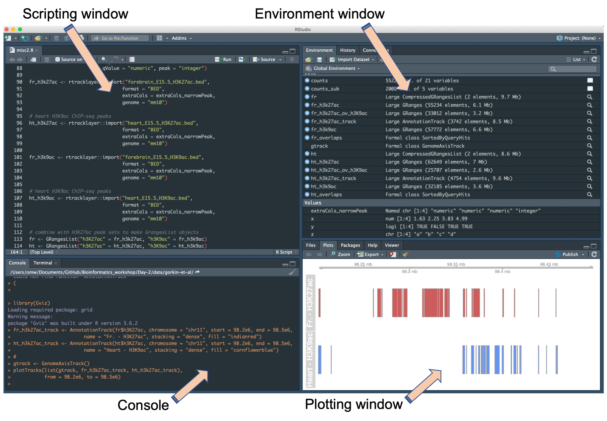
When using RStudio, you will generally want to generate your code using the scripting window first, and then use the options available to submit this code, or segments of it, directly to the console using the buttons at the top of the scripting window (or keyboard shortcuts!).
We will be using RStudio throughout the workshop, although will point out how and when you may wish to run R interactively (such as on an HPC).
Orienting yourself
As with working on the terminal, a good first step is to orient yourself. Let's see where you are on your local computer and reset this location to where you want to be with the getwd() and setwd() functions.
# Where are you on your local machine
getwd()
# Set working directory to the data folder in the github repository you downloaded - notice that the path needs to be in double quotes
setwd("your_path/RNA-seq-Differential-Expression-workshop-June-2022-master/data")
Basic data structures in R
Programming in R is achieved by assigning values to objects. Objects are specific data structures that take on a particular form defined by that object's class. The most fundamental and basic object class in R are vectors.
Vectors
Vectors can only hold one type of data (a property referred to as being atomic). In R, five basic object classes exist:
- numeric - real numbers (e.g. 33.3334)
- integer - whole numbers (e.g. 42)
- character - strings of characters (e.g. letters, words, sentences)
- logical - TRUE or FALSE (commonly called 'Boolean' values elsewhere)
- complex - numbers with real and imaginary parts.
Vectors can be created using the c() function (standing for combine), which concatenates its arguments together into a single vector. c() can be used in conjunction with the assignment operator <- which tells R you want to assign that vector to a specific variable.
# numeric
x <- c(1.63, 2.25, 3.83, 4.99)
# integer
x <- as.integer(c(1, 2, 3, 4))
# character
x <- as.character(c("a", "b", "c", "d"))
# logical
x <- c(TRUE, FALSE, TRUE, TRUE)
# mixed?
x <- c(1, "a")
Each object class has specific attributes, which we can extract using the appropriate accessor functions. For example, the class of an object is itself an attribute that can be obtained using the class() function:
class(x)
Another important attribute is length. For example, if we want to know how many elements are in a character string, we can use the length() function.
length(x)
Vectors can be combined or nested to create a single vector, or evaluated against each other:
# combine a vector and a nested vector
x <- c(1, 2, 3, 4, c(1, 2, 3, 4))
x
# multiply two integer vectors
y <- c(2, 2, 2, 2)
x * y
Even though vectors are atomic, they can be coerced from one class to another using functions written to modify their attributes. e.g.
x <- c(1, 2, 3, 4)
as.character(x)
x <- c(TRUE, FALSE, TRUE, TRUE)
as.numeric(x)
x <- c(1.63, 2.25, 3.83, 4.99)
as.integer(x)
Elements within vectors can be subset or indexed based on their position in that vector. Individual elements can also be assigned names, which can also be used to perform indexing.
# define a character vector
x <- c("a", "b", "c", "d")
# get elements 1 and 3
x[c(1,3)]
# get elements 1 to 3 using the ':' operator
x[c(1:3)]
# define a numeric vector
x <- c(1.63, 2.25, 3.83, 4.99)
# assign it names
names(x) <- c("gene 1", "gene 2", "gene 3", "gene 4")
# index for specific element
x["gene 1"]
Vectors can contain missing values, defined by NA and NaN. These elements can be identified with the functions is.na() or is.nan():
x <- c(1.63, NA, 3.83, 4.99)
x
x.na <- is.na(x)
x.na
# what object class is returned
class(x.na)
Operators
We introduced two operators in the examples above, the assignment operator <- and the sequence operator :. Operators are essentially symbols that tell R how you would like to relate the operands on either side of the symbol. In R, operators can be broadly categorized into assignment, arithmetic, relational, and logical.
The assignment operators are <- and = which both tell R to assign a vector to a some value. It is best to stick to one within a single project.
Below are the basic arithmetic, relational, and logical operators that are useful to know.
Arithmetic operators
| Operator | Effect |
|---|---|
| + | addition |
| - | subtraction |
| * | multiplication |
| / | division |
| ^ | exponentiation |
Some example usage of arithmetic operators:
# addition
1 + 2
# multiplication
2 * 3
# exponentiation
2^4
Relational operators
| Operator | Effect |
|---|---|
| < | less than |
| > | greater than |
| <= | less than or equal to |
| >= | greater than or equal to |
| == | equal to |
| != | Not equal to |
Some example usage of relational operators:
x <- c(1, 2, 3, 4)
# which elements are less than 3
x < 3
# which elements are less than or equal to 3
x <= 3
# define a character string
x <- c("a", "b", "c", "d", "a")
# which elements are equal to a
x == "a"
Logical operators
| Operator | Effect |
|---|---|
| ! | NOT |
| & | AND |
| | | OR |
Some example usage of logical operators:
x <- c(1, 2, 3, 4)
# which elements are NOT equal to 4
x != 4
# which could also be achieved with
!x == 4
# which elements are less than 2 or equal to 4
x < 2 | x ==4
# which elements are less than 2 AND equal to 4
x < 2 & x == 4
Note: When combining operators, operator precedence applies, such that operators with high precedence will be evaluated first. For example, in the above line, x < 2 will be evaluated before x == 4 as the < has greater precedence than ==. You can explore operator precedence in R using the man page returned by ?Syntax.
Relational and logical operators can be used to subset a vector based on the values returned by the operator, and the brackets, as we did above for specific elements.
x <- c(1, 2, 3, 4)
# subset x for values less than 3
x_sub <- x[x < 3]
x_sub
# define a character string
x <- c("a", "b", "c", "d", "a")
# subset x for elements equal to a
x[x == "a"]
Factors
Factors are a special instance of vectors where only predefined values, called levels can be included in the vector. Such vectors are useful when you know that elements of a vector should take on one of those predefined values.
Categorical data is often stored in vectors, making them a very important object class when you start doing any statistical modeling in R. For example, you might store subject sex for all the subjects in your study as a factor, with the levels male and female.
# make a character vector with only male or female as entries
x <- c("female", "female", "male", "female", "male")
# use factor() constructor function to generate the factor
x <- factor(x, levels = c("female", "male"))
# confirm the class and check the levels
class(x)
levels(x)
# use table() to count up all the instances of each level
table(x)
Lists
Sometimes, it may be desirable to store multiple vectors, or even vectors of different object classes, in the same R overall object. Lists are a special object class that permits objects with these attributes, making them distinct from atomic vectors.
In the same way that vectors and factors are constructed using c() and factors() respectively, lists are created using the list() constructor function.
x <- list(c(1.63, 2.25, 3.83, 4.99),
c(2.43, 8.31, 3.12, 7.25),
c(1.29, 3.23, 3.48, 0.23))
# the structure function str() can be useful to examine the composition of a list
str(x)
# confirm the length
length(x)
# lists can be subset using brackets
### subset for first element of list
x[[1]]
### subset for first element of first vector in list
x[[1]][1]
# lists elements can be given names using a character vector equal to list length
names(x) <- c("gene_1", "gene_2", "gene_3")
# names can also be used to subset a list
x[["gene_1"]]
# subsetting can also be achieved with the $ subsetting operator
x$gene_1
In our example list, all three vectors stored in the list are numeric, however as mentioned above, lists can store vectors of different classes.
x <- list(c(1.63, 2.25, 3.83, 4.99),
c(TRUE, FALSE, TRUE, TRUE),
c("a", "b", "c", "d"))
# use the structure function str()to examine the composition of the list
str(x)
Creating a Count Matrix
Once sequencing is completed on your experiment you will be provided a count matrix with sample names across the top of your text file and gene names down the left hand side. This file is used for downstream processing. Today, we will be creating a count matrix of our own to familiarize ourselves with vectors and data frames. We will begin by generating a matrix with 10 columns and 10 rows of random numbers between 0 and 10.
First we create a vector of numbers from 0 to 10:
num.vector <- c(0:10)
We have our computer randomly select 100 numbers from our num.vector and put it in a vector of size 100. You might notice the argument replace=TRUE. This tell the computer to sample from our num.vector with replacement, meaning each number can be chosen to be put in the count.vector more than once.
count.vector <- sample(num.vector, size = 100, replace = TRUE)
count.vector
We now create a matrix using our count.vector. We tell R that we want a matrix with 10 rows and 10 columns with the data in count.vector. byrow means that we are arranging the data row-wise instead of column-wise, which is the default in R.
count.matrix <- matrix(count.vector, ncol=10, nrow=10, byrow = TRUE)
count.matrix
Now that we have created a matrix of random whole numbers for our count matrix, we need to add sample names and genes. I mentioned previously that our sample names will be the column headers and the row names will be the gene names. Hence, we will be needing 10 sample names and 10 gene names for our dataset.
rownames(count.matrix) <- c("gene_1", "gene_2", "gene_3","gene_4","gene_5","gene_6","gene_7","gene_8","gene_9","gene_10")
colnames(count.matrix) <- c("subject_1", "subject_2", "subject_3", "subject_4","subject_5","subject_6","subject_7","subject_8","subject_9","subject_10")
count.matrix
Challenge: We can use a coding shortcut here! It's easy to make typos while writing out all the gene and sample names. Let's use the paste function to make things easier for us. Here we are telling R to make the first part of our name 'gene' and 'sample' respectively. Then, we are telling R to add the numbers 1 through 10 to the end of each sample or gene name.
rownames(count.matrix) <- paste('gene',1:10,sep='_')
colnames(count.matrix) <- paste('subject',1:10,sep='_')
count.matrix
You can access data in the matrix using the commands below.
# check the structure and dimensions with dim()
str(count.matrix)
dim(count.matrix)
# specific elements can be obtained through subsetting
### row 1
count.matrix[1,]
### column 2
count.matrix[,2]
### element 2 of row 3
count.matrix[3,2]
# check class of the object and one row
class(count.matrix)
class(count.matrix[1,])
Matrices are a very important object class for mathematical and statistical applications in R, so it is certainly worth exploring more complex matrix operations if you will be doing any more complex statistical analysis in R.
Data frames
Data frames are very efficient ways of storing tabular data in R. Like matrices, data frames have dimensionality and are organized into rows and columns, however data frames can store vectors of different object classes. Let's convert our matrix to a data frame in R.
count.df <- as.data.frame(count.matrix)
count.df
We can also directly create data frames in R. This is useful if we need to add information about our subjects like sex, race, age range, smoking status, etc. Let's create one of these data frames for our subjects here.
df <- data.frame(subject_id = c("subject_1", "subject_2", "subject_3", "subject_4","subject_5","subject_6","subject_7","subject_8","subject_9","subject_10"),
age = c(45, 83, 38, 23, 65, 40, 32, 89, 77, 53),
gender = c("female", "female", "male", "female", "female", "male", "female","male","male","male"),
status = c("case", "case", "control", "control","case","case","case","control","control","case"))
str(df)
Note that the default behavior of data.frame() in R version < 4.0 is to convert character strings to factors. If you want to prevent this behavior, you can set the StringsAsFactors argument as FALSE. In R versions > 4.0, the default behavior is StringsAsFactors==TRUE.
df <- data.frame(subject_id = c("subject_1", "subject_2", "subject_3", "subject_4","subject_5","subject_6","subject_7","subject_8","subject_9","subject_10"),
age = c(45, 83, 38, 23, 65, 40, 32, 89, 77, 53),
gender = c("female", "female", "male", "female", "female", "male", "female","male","male","male"),
status = c("case", "case", "control", "control","case","case","case","control","control","case"),
stringsAsFactors=FALSE)
str(df)
Data frames can be subset in similar ways to matrices using brackets or the $ subsetting operator. Columns/variables can also be added using the $ operator.
# get first row
df[1,]
# get first column
df[,1]
# get gender variable/column
df[, c("gender")]
# # get gender and status
df[, c("gender", "status")]
# get the gender variable with $
df$gender
# add a column for smoking status
df$smoking_status <- c("former", "none", "heavy", "none","none","heavy","heavy","heavy","former","former")
Relational (e.g. ==) and logical operators (e.g. !) can be used to interrogate specific variables in a data frame. The resulting logical can also be used to subset the data frame.
# obtain a logical indicating which subjects are female
df$gender == "female"
# use logical to subset the data frame for only female subjects (rows)
df2 <- df[df$gender == "female", ]
# check dimensions of the new data frame
dim(df2)
# use the LOGICAL NOT operator ! to obtain only male subjects
df[!df$gender == "female", ]
# this could obviously also be achieved with..
df[df$gender == "male", ]
Beyond the basic object classes
As we discussed, one of the major advantages of R is its enormous user base that are continuously developing and releasing packages. Implementing the additional functionality of these packages often requires more complex data object classes to be created, which are generally related in some way to one or more of the basic data structures in R that we have discussed.
The general approach used to create these novel classes is referred to as object-orientated programming (OOP). Although we will not go into any detail on OOP in this workshop, it is useful to know that several OOP methods are used to create classes in R.
The S4 OOP approach is perhaps the most relevant to this workshop, as it is heavily used by packages from the Bioconductor project, which we will be using on Day 3. S4 OOP provides a flexible approach to creating objects with multiple slots, each with defined names and object classes.
An example of a package that has used an S4 OOP approach to create objects of novel classes is the Bioconductor package GenomicRanges, which provides representation and query of genomic region data in R through object classes such as GRanges.
To efficiently represent genomic regions data, GRanges class objects, at least 3 key slots (each with their own associated class for that vector) will be needed:
- a chromosome slot: with class character (e.g. chr1)
- a start coordinate slot: with class integer (e.g. 338833)
- an end coordinate slot: with class integer (e.g. 338987)
Creating object classes in this way is desirable as it allows accessor functions to be created, which allow very simple interaction with the objects of this class. For example, simply using the chr() accessor function to easily extract all chromosome identities of the genomic regions in my GRanges object.
An excellent tutorial describing S4 classes and their use in the Bioconductor project is available here. While this is not a topic you need understand in great detail, it is worth understanding the basic principles.
Functions
Beyond the functions implemented in base R and packages that you install, R allows you to create user defined functions, which can perform any functionality that you can define.
Defining your own functions can be useful when you want to perform a specific set of tasks repeatedly on some input(s) and return a defined output. Furthermore, once defined functions become part of your global environment and are therefore preserved for future use they minimize the need for repetitive code.
Functions are created using function() with the assignment operator <-. The arguments you use in the function() command define the variables that those arguments will be assigned to when you call the function. The last line of the function defines what output is returned.
Let's define a basic function as an example.
# define the function that takes a single argument and returns a single argument
myfun <- function(x){
y <- x + 1
return(y)
}
# call the function
myfun(x = 10)
# assign the output to a new variable
var1 <- myfun(x = 10)
var1
Functions can have as many arguments as you specify. The names of these arguments are only assigned as variables within the function, however it is good practice to avoid using arguments with the same name as variables already existing in your global environment.
For example, if I already have a variable named x in my environment, I should avoid using x to define the name of the arguments to my function.
myfun2 <- function(num1, num2){
num3 <- num1 + num2
return(num3)
}
# call the function
myfun2(num1 = 10, num2 = 11)
Loops
Loops are used to iterate over a piece of code multiple times, and can therefore be used to achieve specific tasks. The most often used type of loop in R is the for() loop, which will evaluate the contents of the loop for all of the values provided to the for() function.
For example:
x <- c(1,2,3,4,5,6,7,8,9)
# define the loop, using [i] to define the elements of x used in each iteration
for(i in 1:length(x)){
print(x[i] * 10)
}
We may wish to save the output of each iteration of the loop to a new variable, which can be achieved using the following approach:
x <- c(1,2,3,4,5,6,7,8,9)
# create variable to save results to
y <- c()
# define and run the loop
for(i in 1:length(x)){
y[i] <- x[i] * 10
}
# print the new vector to console
y
Basic data visualization
R is a very powerful tool for visualization and provides a large amount of user control over the plotting attributes. Basic visualization in R is achieved using the plot() function.
# generate a set of random numbers to plot
x <- rnorm(1000, mean = 10, sd = 2)
y <- rnorm(1000, mean = 20, sd = 1)
# plot x against y to produce a scatter plot
plot(x, y)
# add labels, title, and color
plot(x, y,
main = "X vs. Y",
xlab = "X values",
ylab = "Y values",
col = "red")
R can also be easily used to generate histograms:
# generate a simple histogram for x
hist(x, col = "indianred")
# the breaks argument can be used to change how the intervals are broken up
hist(x, col = "indianred", breaks=10)
hist(x, col = "indianred", breaks=50)
hist(x, col = "indianred", breaks=100)
This is an extremely brief introduction to data visualization in R, however there are many excellent online resources for learning more about how to perform effective data visualization in R.
Visualization specific packages
There are a large number of packages designed specifically for visualization and are very useful in bioinformatic analyses. We won't cover these here since they are covered extensively elsewhere, but some useful visualization packages to be aware of include:
- ggplot2
- ggpubr
- ploty
Importantly, visualization implemented in these packages form the basis for some bioinformatics specific data visualization packages that we will explore later in the workshop.
Exporting Tabular Data
We may want to save our count matrix and metadata from the Matrices section to files we can later read back into R.
The major functions in base R that exist for writing tabular data to file are write.table() and write.csv(). Similarly to the read functions, write.table() provides a more generalized solution to writing data that requires you to specify the separator value.
In both functions, the first argument specifies the object in your global environment that you wish to write to file. The second argument defines the absolute or relative path to the location you wish to save this file.
setwd("your_path/RNA-seq-Differential-Expression-workshop-June-2022-master/data")
# write to tab delimited file using write.table
write.table(count.df, file = "count_df.txt", sep = "\t")
In contrast, read.csv() does not require you to set the delimitor value, and by default writes data to comma separated value files (.csv).
setwd("your_path/RNA-seq-Differential-Expression-workshop-June-2022-master/data")
write.csv(df, file = "metadata_df.csv")
Importing Tabular Data
Tabular data are often stored as text files where the individual fields containing data points are separated by punctuation points. Three functions exist in base R to facilitate reading in tabular data stored as text files.
read.table() - general function for reading in tabular data with various delimiters
read.csv() - used to read in comma separated values files, where commas are the delimiter
read.delim() - used to read in files in which the delimiters are tabs
Use read.table() to read in the count_df.txt. Since read.table() is a general function for loading in tabular data, we need to specify the correct separator/delimiter value using the sep argument. Tab delimited data is specified using \t in the sep argument.
setwd("your_path/RNA-seq-Differential-Expression-workshop-June-2022-master/data")
# check where we are
getwd()
# using read.table
count.df <- read.table(file = "count_df.txt",
sep = "\t", header = TRUE, stringsAsFactors = FALSE)
### Note 1: header accepts logical value indicating if the first row are column names (default FALSE)
### Note 2: we use stringsAsFactors
# check class, dimensions and structure
class(count.df); dim(count.df); str(count.df)
Now use read.delim(). An important difference between read.delim() and read.table() are the default setting for the sep and header arguments. By default in read.delim(), sep is set to \t and the header argument is set to TRUE, so we do not need to explicitly call those arguments.
setwd("your_path/RNA-seq-Differential-Expression-workshop-June-2022-master/data")
# using read.delim
count.df <- read.delim(file = "count_df.txt", stringsAsFactors=FALSE)
# check class, dimensions and structure
class(count.df); dim(count.df); str(count.df)
read.csv() is used in exactly the same way read.delim(), however the file specified must contain data separated by commas and have the extension .csv.
setwd("your_path/RNA-seq-Differential-Expression-workshop-June-2022-master/data")
meta_data <- read.csv(file = "metadata_df.csv",row.names=1)
meta_data
Let's read in some publicly available data from a real RNA-seq run. The paper and access to the data can be found at this link. This data was generated from synovial fluid collected from inflamed joints of patients with rheumatoid arthritis before and after treatment with a TNF-a blocker, a common treatment for this disease.
setwd("your_path/RNA-seq-Differential-Expression-workshop-June-2022-master/data")
example.df <- read.table(file = "GSE198520_Raw_gene_count_matrix.txt",
sep = "\t", header = TRUE, stringsAsFactors = FALSE)
head(example.df)
When datasets get very large, these base R functions can be quite slow. Although we do not have time to cover them here, the readr and data.table packages contain functions that introduce extremely fast ways of reading data into an R environment.
Save R objects to file
It is possible to save R objects to a file that maintains all of their attributes so that they can be easily loaded back into a new R session. This functionality is achieved using the save() and load() functions.
save() accepts the names of the R objects you wish to write to a file (which will have the extension .rdata) as the first arguments, and the file path where you wish to write this file under the file argument. For example:
# create some R objects
x <- c(1.63, 2.25, 3.83, 4.99)
y <- c(TRUE, FALSE, TRUE, TRUE)
z <- c("a", "b", "c", "d")
# check where we are
getwd()
# save all 3 objects to one file
save(x, y, z, file = "my_r_objects.rdata")
These objects can then be loaded back into your global environment using the load() function with the absolute or relative file path. The objects will appear in your new environment with exactly the same names as in your previous environment.
load(file = "my_r_objects.rdata")
Single R objects can be saved and restored in a similar way using the saveRDS() and readRDS() functions. Files saved using RDS must take on the .rds extension.
# save a single object to a specific file path
saveRDS(x, file = "my_r_object.rds")
# use the assignment operator to assign object to any variable you want
x <- readRDS(file = "my_r_object.rds")
# I changed my mind, I want the object to be assigned to variable `a` in my new env
a <- readRDS(file = "my_r_object.rds")
Data Management & Setup
Data Management and Setup
Learning objectives:
- Understand the experimental design for dataset we will be using
- Learn how to read raw count data from an RNA-seq experiment into R
Downloading the workshop repository
We will be running most of the analysis for the workshop on your local machines. To have access to the relevant datasets and other workshop materials, we need to download (or clone) the repository (repo) from GitHub.
If you are comfortable using the Terminal or a Terminal emulator on your computer, you can copy and paste the code below to clone the repository onto your device.
git clone https://github.com/Dartmouth-Data-Analytics-Core/RNA-seq-Differential-Expression-workshop-June-2022
Alternatively, you can directly download the repository by going directly to the workshop GitHub repo from the dropdown menu and selecting Download ZIP as shown in the figure below.
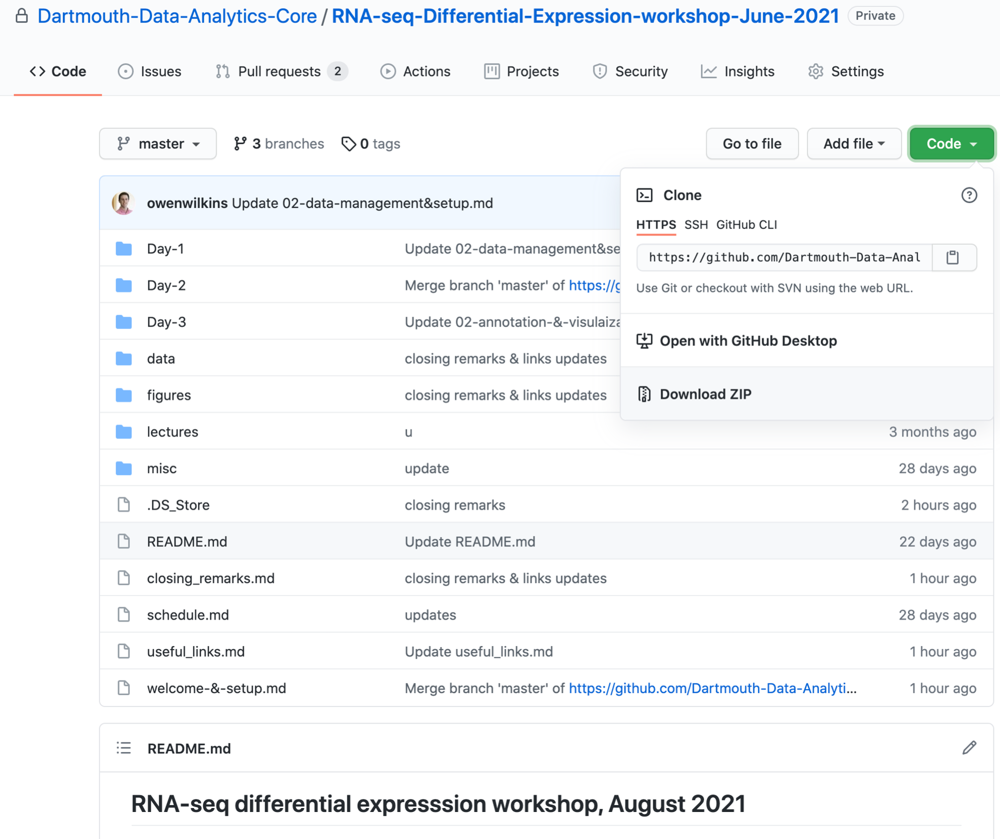
Importing count data into R
Several R-packages exist that are designed for analysis of bulk RNA-seq data, including EdgeR,limma-voom, DESeq2. In this workshop, we will use DESeq2 to perform most analysis, including reading in the counts, normalization, and statistical modeling.
Detailed
tutorials for using DESeq2 can be found on its Bioconductor page.
DESeq2 is a well organized package that applies robust algorithms to perform several aspects of RNA-seq data analysis. If you plan to use DESeq2 for your work, you should read both the tutorials made available on their Bioconductor page, and the original manuscript for DESeq2, in
Love et al, 2014 to develop an understanding of the theory behind DESeq2 and the processes implemented by the package.
Despite DESeq2’s extensive functionality, it may not be the best choice for all experimental designs, for example, analysis of time course experiments, or other hierarchical/clustered study designs. If you are in any doubt about which tool to use, consult an expert.
The figure below provides an outline of the major steps in a standard DE analysis with DESeq2, and highlights key functions used at each step.
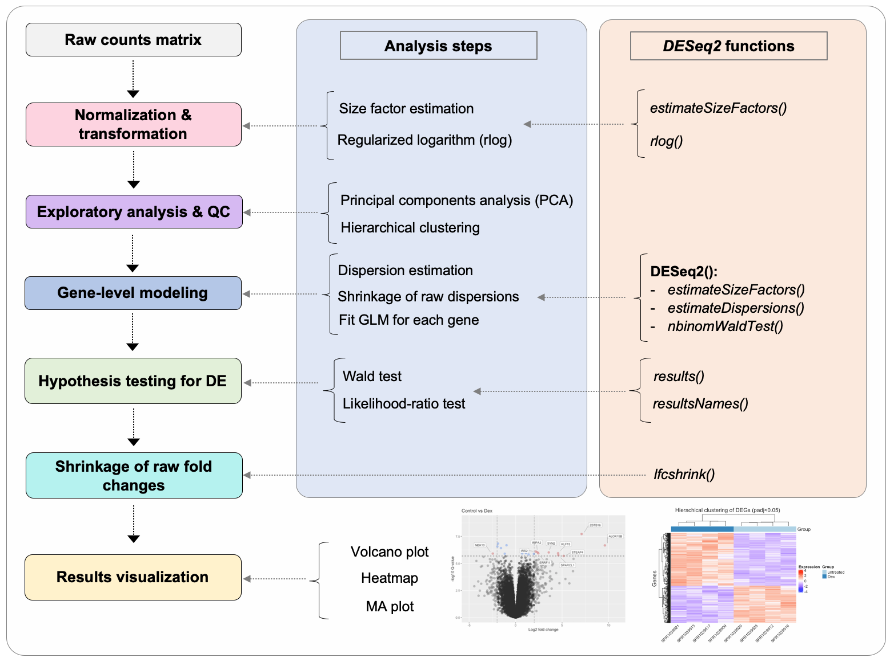
Lets start by loading the packages we will need:
library(DESeq2)
Set your working directory to the location of the workshop folder on your local machine:
##### NOTE: YOU MAY NEED TO EDIT THE BELOW PATH
setwd('~/Documents/GitHub/RNA-seq-Differential-Expression-workshop-June-2022/')
The dataset
The dataset that we are using comes from this
paper, generated as part of a study examining the effects anti-inflammatory effects of glucocorticoids on human airway smooth muscle cells.
Four cell lines were established from human donors and treated with one of the below:
- Control (vehicle)
- Dexamethasone (dex)
- Albuterol (alb)
- Both (dexamethasone + albuterol)
Read in raw count data
Now we can read in our data. How you read your data into DESeq2 depends on what format your raw reads counts are in (individual files for each sample, or a gene expression matrix) and how your read counts were quantified (e.g. at the gene or transcript level). DESeq2 provides a specific function DESeqDataSetFromHTSeqCount to read in gene-level read count abundances from htseq-count.
# read in the matrix we generated using htseq-count
cts <- as.matrix(read.table("data/all_counts.txt",
sep="\t",
header = TRUE,
row.names=1,
stringsAsFactors = F))
# quick look at the matrix
head(cts)
tail(cts)
# filter out these last 5 rows
cts <- cts[1:(nrow(cts)-5),]
tail(cts)
If you used an assay that captures fragments along the full length of RNA transcripts, and generated transcript-level abundances (rather than gene-level counts) you should load read counts into R using the tximport() function from the tximport package. Methods that generate expression estimates at the transcript-level include:
- RSEM
- Salmon
- kallisto,
Even if you only plan to do a gene-level DE analysis, it has been shown that transcript-level estimates can improve gene-level inferences. Therefore if you are able to estimate counts at the transcript-level for your data, it is beneficial to do so.
Briefly, this method works by collapsing transcript-level estimates into gene-level estimates, while an offset matrix is calculated based on the average transcript length, that is used in the differential expression analysis to correct for biases that may be introduced by transcript-length differences between samples. You can read more about how to do this in the documnetation for tximport.
If you collected 3’-end data, e.g. with the Lexogen QuantSeq assay, you should not do this correction for length, as there is no length bias in your data. Doing this correction would introduce bias into your data and likely distort your differential expression results. For 3’-end data, it is best to read in the raw count matrix directly using (DESeqDataSetFromHTSeqCount) or simply (read.table()).
Read in sample metadata
We also need to read in the sample annotation (metadata) that we
downloaded from the SRA, which contains sample labels, experimental
labels, and sequencing run information, etc.
# read in the file from the SRA metadata that has sample/experimental labels
colData <- read.csv("data/sample_metadata.csv", row.names=1)
head(colData)
# order by SRA run accession
colData <- colData[order(colData$SRR),]
# quick look
head(colData)
Lets have a look at our experimental design variable (drug treatment:)
colData$tx.group
It is important that we make this variable a (factor) class variable, with the reference group set as the variable we want to be considered baseline expression by having it first in the list. You can create an ordered factor variable from a character string in R using:
# now make this a factor as it will be the variable we will use define groups for the differential expression analysis
colData$tx.group <- factor(colData$tx.group, levels=c("untreated", "Dex", "Alb", "Alb_Dex"))
# have a look at this variable
colData$tx.group
## [1] untreated Dex Alb Alb_Dex untreated Dex Alb
## [8] Alb_Dex untreated Dex Alb Alb_Dex untreated Dex
## [15] Alb Alb_Dex
## Levels: Alb Alb_Dex Dex untreated
Construct the DESeq2 data set & explore the characteristics of the data
DESeq2 uses an object class called the DESeqDataSet that stores the
read counts, metadata, experimental design, and all the intermediate
values calculated during the analysis. DESeqDataSet extends the
SummarizedExperiment class object from the SummarizedExperiment
R/Bioconductor package that is commonly used to store data from
expression studies and other genomics assays in R.
Three elements are required to generate the DESeqDataSet:
- matrix of raw counts
- sample metadata (colData)
- a design formula
Lets create the DESeqDataSet object.
dds <- DESeqDataSetFromMatrix(countData = cts,
colData = colData,
design = ~ tx.group)
We could have also done this using the DESeqDataSetFromHTSeqCount()
function by specifying a SampleTable that includes the path to the
htseq-count files, however since we compiled the read counts into one
file, we can just load the dataset directly.
Before moving on, lets explore our DESeq2 class object a bit to get to familiar with its contents.
# have a quick look at the object
dds
# print structure
str(dds)
# several accessor functions exist to access specific data 'slots'
head(counts(dds))
head(colData(dds))
# specific slots can also be accessed using the '@'
dds@colData
Lets save the DESeq2 object at this point (so that we don’t have to do the above everytime we want to work with our data).
saveRDS(dds, file = "DESeq2.rds")
Normalization
Part 4 - Data normalization in RNA-seq
Learning objectives:
- Understand why read counts must be normalized in RNA-seq data
- Review the principles of basic RNA-seq normalization strategies
- Understand the principles of DESeq2 Median-of ratios normalization and how to implement using the DESeq2 package
Set-up
If you started a new R session, you must load in the DESeq2 object we created in the previous lesson, which contains the counts and sample metadata.
# load in the R object
dds <- readRDS("DESeq2.rds")
As we saw in the last lesson, the counts() function can be used to extract the matrix of raw read counts from the DESeq2 object:
cts <- counts(dds, normalized=FALSE)
You will also need to load some R-packages that will be used in this lesson:
library(ggplot2)
library(tximport)
library(DESeq2)
library(biomaRt)
Count normalization in RNA-seq
To compare expression levels between genes within a sample, or genes across multiple samples, it is critical the data is normalized to allow appropriate interpretation of the results. Which normalization strategy used depends on several factors such as library type, and type of comparison you wish to make (e.g. within- vs between-sample).
Below we will discuss the major sources of variation that need to be accounted for during normalization in order to reach appropriate conclusions about your results. Subsequently, we will discuss the normalization approaches that account for these sources of variation and when to use them.
NOTE: If you attend the RNA-seq Primary Data Analysis Workshop this content will be familiar.
Sources of variation in RNA-seq data requiring normalization
Gene length
Gene length varies a great deal across transcriptomes.
In the example below, we see two genes, X and Y. If we were to simply compare the number of reads successfully mapped to gene X and gene Y, we would conclude gene X is expressed ~2x that of gene Y.
However, since gene X is ~2x longer than gene Y, gene X contributed ~2x as many RNA fragments to the original sequencing library. Gene X therefore only has more reads mapped to it because it is longer, NOT because it is truly expressed at greater level than gene Y.

To address gene length bias, we must normalize raw read counts in a way that accounts for the size of each gene. Once we do this for gene X & gene Y, we would conclude their gene expression levels are similar.
Normalization for gene length is critical when comparing between genes within the same sample, however when comparing expression of the same gene across different samples, correction for gene length is not as important since we assume the gene is of the same length in all samples.
NOTE: An exception to this rule is when comparing expression levels of different transcripts between samples, which may change in length.
Library size/sequencing depth
Although samples are pooled together at similar concentrations for sequencing, some samples end up being sequenced more than others, leading to slight differences in how many reads are produced for that sample, and therefore sequencing depth and size. Furthermore, if samples are sequenced on separate runs, their sequencing depths may be very different.
If we don't account for variation in sequencing depth, we might conclude some genes are expressed at greater levels in a sample that has simply been sequenced to a greater depth.
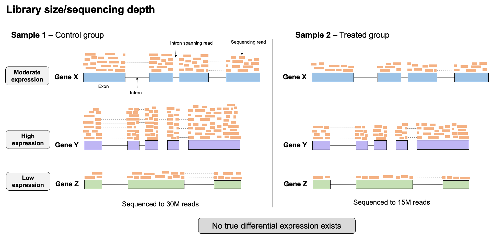
In the above example, sample 1 (left) is sequenced to twice the depth of sample 2 (right), with 30 million reads vs 15 million reads. None of the genes are truly differentially expressed between the samples, and all 3 genes have approximately twice as many reads as those in sample 1 simply due to the excess sequencing depth.
Library composition
The presence of truly differentially expressed genes between samples causes the number of reads for other genes in those samples to be skewed. In the below example, gene Y is differentially expressed between the two samples, with much higher expression in sample 1. This means that fewer sequencing reagents are available in sample 1 for sequencing the other genes (X and Y) and they will achieve fewer reads than the same genes in sample 2, even if the samples are sequenced to the same depth.

Such library composition effects must also be accounted for during normalization to avoid falsely interpreting compositional effects as true differential expression findings. If samples you wish to compare are very distinct in their gene expression profiles, such as comparing drug-treated samples vs untreated samples, compositional effects may be large, therefore effectively correcting for these effects becomes critical for appropriate interpretation.
Normalization methods
Several normalization methods exist for RNA-seq data. Which method you use depends on the comparison you are trying to make (e.g. between or within samples), therefore it is important to understand how each is calculated and when to use it.
NOTE: An optional lesson is available in the Day-1 directory that demonstrates how these standard normalization methods can be implemented using basic R code.
Counts per million (CPM)
CPM is a simple normalization method that involves scaling the number of reads mapped to a feature by the total number of reads in a sample. This fraction is multiplied by 1 million in order to provide the number of reads per million mapped in the sample.

KEY POINT: CPM does NOT normalize for gene length, therefore cannot be used to compare expression between different genes in the same sample. An exception to this rule would be in the case of 3'-end RNA-seq datasets, which have no gene length bias, therefore CPM would be appropriate for comparing expression between genes in the same sample in such data.
Transcripts per million (TPM)
TPM has become a common normalization approach for RNA-seq data. Reads mapped to a feature (gene) are first normalized by the length of the feature (in kilobases), then divided by the total number of length normalized reads in the sample. Like CPM, reads are scaled per million.

TPM normalizes for gene length AND sequencing depth, so TPM values can be used to compare expression levels of genes within a sample AND between samples.
Reads/fragments per kilobase of exon per million mapped reads (RPKM/FPKM)
RPKM and FPKM have been used for many years as normalization strategies in RNA-seq experiments. RPKM/FPKM are calculated in a very similar way to TPM, however the order of operations is essentially reversed. For RPKM and FPKM, reads are first normalized for sequencing depth, then gene length.

The difference between RPKM and FPKM is very simple: RPKM is used for single-end experiments, whereas FPKM is used in paired-end experiments. In single-end experiments, we only measure one end of the DNA fragments in our library, however in paired-end experiments we measure the same DNA molecule 2x (once from each end), therefore we only need to count that fragment once during normalization, despite having 2 reads for it.
Although the measures are calculated in a very similar way, the reversed order of the calculations has a profound effect on how the values calculated by each method can be interpreted. Consider the example below:
Raw counts:
| Gene | Sample 1 | Sample 2 |
|---|---|---|
| X (4kb) | 65 | 73 |
| Y (3kb) | 20 | 25 |
| Z (1kb) | 15 | 12 |
| Total | 100 | 110 |
Raw counts for 2 samples with slightly different read depths (100 vs 110) therefore normalization is required to compare gene expression levels.
RPKM:
| Gene | Sample 1 | Sample 2 |
|---|---|---|
| X (4kb) | 1.625 | 1.659 |
| Y (3kb) | 0.667 | 0.758 |
| Z (1kb) | 1.500 | 1.091 |
| Total | 3.792 | 3.508 |
Note how the proportion of total RPKM values for any one given gene is different depending on the dataset, as the total RPKM values are not equal across all samples. Therefore, it is not straightforward to compare RPKM values for a single gene across samples.
TPM:
| Gene | Sample 1 | Sample 2 |
|---|---|---|
| X (4kb) | 4.286 | 4.730 |
| Y (3kb) | 1.758 | 2.160 |
| Z (1kb) | 3.956 | 3.110 |
| Total | 10 | 10 |
Total TPM values across samples are equal, therefore the TPM values for each gene can be interpreted on the same scale between samples, making TPM values less susceptible to bias. TPM has now been suggested as a general replacement to RPKM and FPKM.
Limitations of basic RNA-seq normalization approaches:
Despite the benefits of interpretability achieved by TPM, limitations still exist, and TPM values (like RPKM/FPKM) are susceptible to misuse in some contexts, discussed further in Zhao et al, 2020.. In particular, while TPM does normalize for library composition effects between samples, when composition effects become very large (such as when comparing between experimental groups in a differential expression experiment) TPM can suffer some biases.
To address these issues, more complex normalization algorithms have been developed that more completely address library composition issues when very large differences in gene expression exist between samples. These methods are generally used to normalized RNA-seq data in the context of a differential expression analysis. For example:
- DESeq2's median-of-ratios
- EdgeR's TMM method (Trimmed Mean of M-values)
Normalization for DE analysis: DESeq2 Median-of ratios
DESeq2 uses an algorithm referred to as the median-of-ratios method to correct for both library size AND library composition, allowing for comparisons to be made between expression levels for individual genes across samples.
This method is performed in two main steps:
1. Calculate sample-specific size factors that are used to normalize each sample
2. Normalize raw read counts for each sample using sample-specific size factors.
The figure below provides an example of how these steps are performed to normalize a matrix of raw counts.
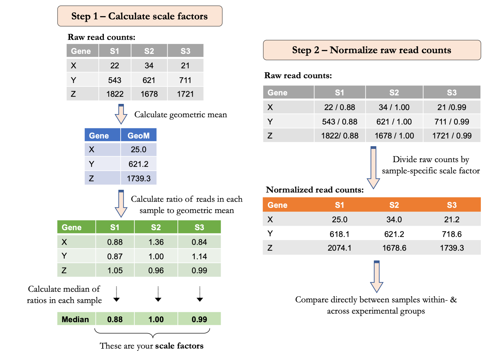
The method relies on the assumption that most genes are not differentially expressed, and those genes that are differentially expressed will not dramatically affect the median ratio values, making the size factors an appropriate normalization factor for each sample. If you expect this assumption to be violated, you should consider using a different method.
Fortunately, DESeq2 provides the function estimateSizeFactors() to apply this method for us, accepting a DESeqDataset object as input to the function.
dds <- estimateSizeFactors(dds)
Note: This video from
StatQuest provides an excellent summary of the steps performed by
estimateSizeFactors()in order to calculate these size factors.
Size factors are usually close to 1, and presence of outliers could suggest violation of assumptions required to use the median of ratios method. It is therefore helpful to check the distribution of size factors in our dataset.
# extract size factors
sizeFactors(dds)
# plot histogram
hist(sizeFactors(dds),
breaks=6, col = "cornflowerblue",
xlab="Size factors", ylab="No. of samples",
main= "Size factor distribution over samples")
After we have calculated the size factors, we can use the counts() function, with normalized set to TRUE), to return the matrix of counts where each column (each library/sample) have been divided by the size factors.
# calculate normalized counts
counts_norm <- counts(dds, normalized=TRUE)
# print top rows
head(counts_norm)
Comparing the normalized to the raw counts, we can clearly see they are different.
head(counts(dds, normalized=FALSE))
We can use this table of normalized read counts to compare values for individual genes across samples. We might want to use this to (sanity) check the expression of a few genes of interest, before we actually do any statistical modeling.
Let's do this with the DUSP1 gene that was reported as significantly DE in the manuscript associated with these data:
# lets make a function to generate a quick plot of the normalized counts
gene_plot <- function(ENSG, gene_symbol){
# save the normalized counts in a dataframe
cnts <- counts(dds, normalized=TRUE)
colnames(cnts) <- colData(dds)$SRR
# extract the counts for specified ENSG ID and add sample group data
df1 <- data.frame(log2(cnts[ENSG,]), colData(dds)$tx.group)
colnames(df1) <- c(paste0("log2_gene"), "sample_group")
# use ggplot2 to make a plot of counts vs sample group
p1<- ggplot(df1, aes(sample_group, log2_gene)) +
geom_jitter(aes(color = sample_group)) +
ggtitle(paste0(gene_symbol), " - Log2 Normalized counts")
# print the plot
print(p1)
}
# now apply the function to print a plot for a specified gene
gene_plot(ENSG = "ENSG00000120129", gene_symbol = "DUSP1")
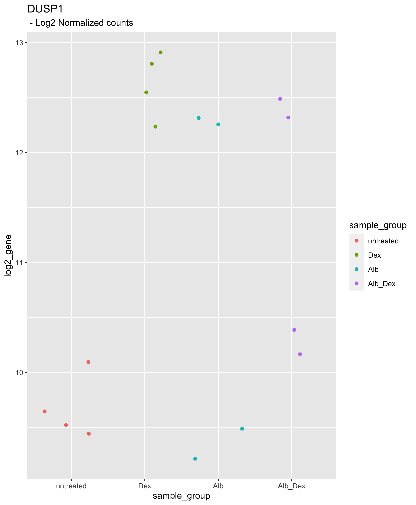
DUSP1 expression is consistently higher in the DEX samples than the untreated, suggesting this gene is differentially expressed, validating prior knowledge and giving us confidence that our experiment worked and sample labels are all correct.
It is worth noting at this point that DESeq2 normalized counts are not used directly for the testing of DE. Library composition is included as a parameter in the DESeq2 model, allowing measurement precision to be modeled correctly. Therefore, raw counts should always be used as input for DESeq2.
In a later lesson, we will discuss how the size factors calculated for count normalization with DESeq2 are used in formal statistical tests of differential expression.
Important note:
DESeq2 normalized read counts are NOT normalized for gene length, so cannot be used to compare expression levels between genes within the same sample.
For such comparisons between genes, we need to use measures such as:
- Transcripts per million (TPM)
- Fragments per kilobase million (FPKM)
- Reads per kilobase million (RPKM)
Summary
The below table summarizes the normalization methods described above. Make sure you select the appropriate method for your dataset.
| Method | Name | Accounts for | Appropriate comparisons |
|---|---|---|---|
| CPM | Counts per million | Depth | - Between-sample - Within experimental group |
| TPM | Transcripts per million | Depth & feature length | - Between- and within-sample - Within experimental group |
| RPKM/FPKM | Reads/fragments per kilobase of exon per million |
Depth & feature length | - Within-sample |
| DESeq2 | median-of-ratios | library size and composition | - Between-sample |
This video provides an excellent explanation of RPKM, FPKM, & TPM, and explains why it is better to use TPM if you need to correct for library size AND gene length.
Optional: Normalization
Part 4 - Data normalization in RNA-seq
Learning objectives:
- Learn the principles behind the major normalization strategies in RNA-seq
- Implement these normalization strategies using custom R code
Set-up
If you started a new R session, you must load in the DESeq2 object we created in the previous lesson, which contains the counts and sample metadata.
# load in the R object
dds <- readRDS("DESeq2.rds")
As we saw in the last lesson, the counts() function can be used to extract the matrix of raw read counts from the DESeq2 object:
# load deseq2 package
library(DESeq2)
# extract counts
cts <- counts(dds, normalized=FALSE)
Count normalization in RNA-seq
To compare expression levels between genes within a sample, or genes across multiple samples, it is critical the data is normalized to allow appropriate interpretation of the results. Which normalization strategy used depends on several factors such as library type, and type of comparison you wish to make (e.g. within- vs between-sample).
Normalization methods
Several normalization methods exist for RNA-seq data. Which method you use depends on the comparison you are trying to make (e.g. between or within samples), therefore it is important to understand how each is calculated and when to use it.
Counts per million (CPM)
CPM is a simple normalization method that involves scaling the number of reads mapped to a feature by the total number of reads in a sample. This fraction is multiplied by 1 million in order to provide the number of reads per million mapped in the sample.
Calculate CPM for our dataset:
# look at the counts object
head(cts)
# write a function that will calculate CPM
cpm <- function(counts) {
cpm <- c()
for(i in 1:length(counts)){
cpm[i] <- counts[i] / sum(counts) * 1e6
}
cpm
}
# apply function to the columns of raw counts data
# we start at the third column because the first two columns have the ensemble IDs and gene names
cts_cpm <- apply(cts[, 3:5], 2, cpm)
## NOTE: we are calculating cpm for first 3 samples only to save time..
# add gene info columns back in
cts_cpm <- cbind(cts[, c(1,2)], cts_cpm)
# write to file
write.csv(cts_cpm, file="cts_CPM.csv")
NOTE: CPM does NOT normalize for gene length, therefore cannot be used to compare expression between different genes in the same sample. An exception to this rule would be in the case of 3'-end RNA-seq datasets, which have no gene length bias, therefore CPM would be appropriate for comparing expression between genes in the same sample in such data.
Transcripts per million (TPM)
TPM has become a common normalization approach for RNA-seq data. Reads mapped to a feature (gene) are first normalized by the length of the feature (in kilobases), then divided by the total number of length normalized reads in the sample. Like CPM, reads are scaled per million.
Since TPM normalizes for both gene length and sequencing depth, TPM values can be used to compare expression levels of genes within a sample, as well as between samples. TPM is recommended instead of RPKM/FPKM, for reasons we will discuss below.
Calculate TPM from our raw read counts:
# read in gene lengths matrix (pre made for you)
gene_lengths <- read.table("data/gene-lengths-grch38.tsv", sep="\t", stringsAsFactors=FALSE, header=TRUE)
# look at the lengths object
head(gene_lengths)
# write a function that will calculate TPM
tpm <- function(counts, lengths) {
rate <- counts / lengths
tpm <- c()
for(i in 1:length(counts)){
tpm[i] <- rate[i] / sum(rate) * 1e6
}
tpm
}
# apply function to the columns of raw counts data
cts_tpm <- apply(cts[, 3:5], 2, tpm, gene_lengths$length)
## NOTE: we are calculating tpm for first 3 samples only to save time..
# add gene info columns back in
cts_tpm <- cbind(cts[, c(1,2)], cts_tpm)
# write to file
write.csv(cts_tpm, file="cts_TPM.csv")
Now you have a separate expression file containing all the normalized count values, and can be used to compare gene expression between samples, as well as between genes within a sample.
You could use this matrix to plot TPM values for some genes of interest. For example, the manuscript associated with these data (Himes et al, 2014, PloS One) identifies DUSP1 as a differentially expressed gene in their study. Lets plot DUSP1 TPM values to see if we can confirm this observation.
NOTE: Since we only calculated TPM for a subset of samples above (to save time) the example below will first load the complete TPM normalized dataset.
Visualize DUSP1 TPM expression levels:
# read in file containing all TPM counts (pre-made for you)
cts_tpm_full <- read.csv("data/all_counts_TPM-full.csv")
# get expression values for DUSP1 row
DUSP1_tpm <- cts_tpm_full[cts_tpm_full$gene_name=="DUSP1",]
# remove gene info columns
DUSP1_tpm <- DUSP1_tpm[ ,c(4:ncol(DUSP1_tpm))]
# convert to a numeric vector
DUSP1 <- as.numeric(DUSP1_tpm[1,])
# generate barplot of gene expression across samples
ppi=300
png("DUSP1_tpm.png")
barplot(DUSP1,
col="lightblue", ylab="TPM", xlab="sample",
main = "DUSP1 expression", las = 1)
dev.off()
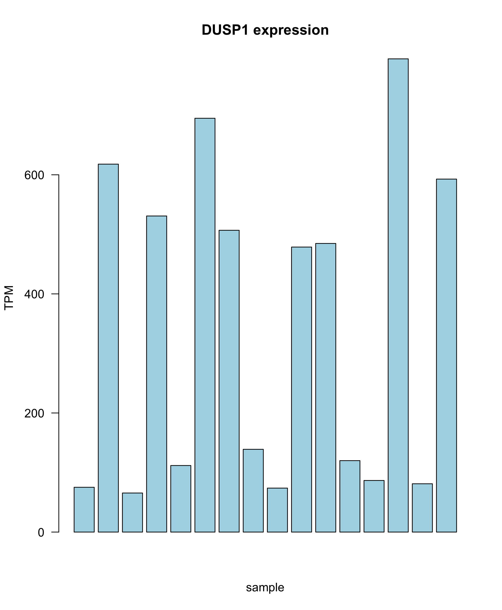
DUSP1 expression is clearly variable across the samples, suggesting differential expression across sample groups may exist (treated vs untreated). This can be tested statistically in a formal differential expression analysis (more about this later).
Reads/fragments per kilobase of exon per million mapped reads (RPKM/FPKM)
RPKM and FPKM have been used for many years as normalization strategies in RNA-seq experiments. RPKM/FPKM are calculated in a very similar way to TPM, however the order of operations is essentially reversed. For RPKM and FPKM, reads are first normalized for sequencing depth, then gene length.
The difference between RPKM and FPKM is very simple: RPKM is used for single-end experiments, whereas FPKM is used in paired-end experiments. This is because in single-end experiments we only measure one end of the DNA fragments in our library, however in paired-end experiments we measure the same DNA molecule 2x (once from each end), therefore we only need to count that fragment once during normalization, despite having 2 reads for it.
Since our dataset is paired-end and we counted the number of fragments in the quantification step, we are calculating FPKM. Calculate FPKM from our raw read counts:
# write a function that will calculate FPKM
fpkm <- function(counts, lengths) {
rate <- counts / lengths
fpkm <- c()
for(i in 1:length(counts)){
fpkm[i] <- rate[i] / sum(counts) * 1e9
}
fpkm
}
# apply function to the columns of raw counts data
cts_fpkm <- apply(cts[, 3:5], 2, fpkm, gene_lengths$length)
## NOTE: we are calculating fpkm for first 3 samples only to save time..
# add gene info columns back in
cts_fpkm <- cbind(cts[, c(1,2)], cts_fpkm)
# write to file
write.csv(cts_fpkm, file="cts_FPKM.csv")
REMEMBER: With RPKM/FPKM, the total number of normalized read counts per sample may be different, meaning it can be hard to compare proportions of reads for a specific gene between two samples (watch this video, or return to the normalization lecture, for more details. We suggest TPM as a general purpose replacement for RPKM/FPKM.
Choose the most appropriate method for your dataset
The below table summarizes the normalization methods described above. It is important to learn when it is appropriate to apply each one to your dataset based on the comparisons you are trying to make.
| Method | Name | Accounts for | Appropriate comparisons |
|---|---|---|---|
| CPM | Counts per million | Depth | - Between-sample - Within experimental group |
| TPM | Transcripts per million | Depth & feature length | - Between- and within-sample - Within experimental group |
| RPKM/FPKM | Reads/fragments per kilobase of exon per million |
Depth & feature length | - Within-sample |
| DESeq2 | median-of-ratios | library size and composition | - Between-sample |
Further Reading
Video links
Futher reading
Day 2
Exploratory Analysis
01 - Exploratory data analysis
Learning objectives:
- Understand the principal of dimension reduction for exploratory data analysis
- Develop a working understanding of common dimension reduction approaches such as principal components analysis (PCA) and unsupervised hierarchical clustering
- Learn how to perform dimension reduction in R on RNA-seq data
Set-up
Load the DESeq2 dataset:
# set working directory (YOU MAY NEED TO CHANGE THIS PATH)
setwd('~/Documents/GitHub/RNA-seq-Differential-Expression-workshop-June-2022-master/')
# read in the RDS object
dds <- readRDS("DESeq2.rds")
Load required R-packages:
library(ggplot2)
library(DESeq2)
library(pheatmap)
library(ComplexHeatmap)
library(RColorBrewer)
library(circlize)
Introduction
Before running a differential expression analysis, it is good practice to explore the relationships between samples based on their gene global gene expression profiles. This analysis allows us to perform several quality control checks such as confirming that replicates cluster together, or the dataset is free from batch effects. Furthermore, these analyses allow us to build expectations for our DE analysis.
To perform these analyses, we generally make use of unsupervised statistical analysis methods. These methods make no prior assumptions about relationships between samples, and aim to reveal clusters and groups that form naturally in our data.
Such methods are often referred to as dimension reduction methods since they generate a simplified representation of the original dataset. We will discuss two of these methods that can be used for RNA-seq data:
- Principal components analysis (PCA)
- Unsupervised hierarchical clustering
NOTE: We will not cover much of the fundamental math, probability and statistics that are required to completely understand the statistical analysis methods discussed. Such training is best sought out through formal instruction, and is usually not included in applied bioinformatics courses. While a complete understanding may not be necessary in all situations, is important to recognize when more specialist expertise is needed to assist with your analysis.
Part 1: Principal components analysis (PCA)
PCA is a very popular approach for dimensionality reduction. At its simplest level, PCA accepts a matrix of numerical values (e.g. gene expression matrix, ChIP-seq counts, etc.), and returns a set of numerical vectors (principal components) that represent the axes of greatest variation in the dataset.
The principal components (PCs) explain distinct sources of variation in the data, and represent the lower-dimensional space that the original dataset has been projected into. Importantly, each PC explains more variation in the dataset than the last (e.g. PC1 explains more variation than PC2).
By using the projection values of each sample along the PCs, we can visualize this lower-dimensional space to learn defining properties of the dataset. e.g. do samples form clusters based on experimental groups?
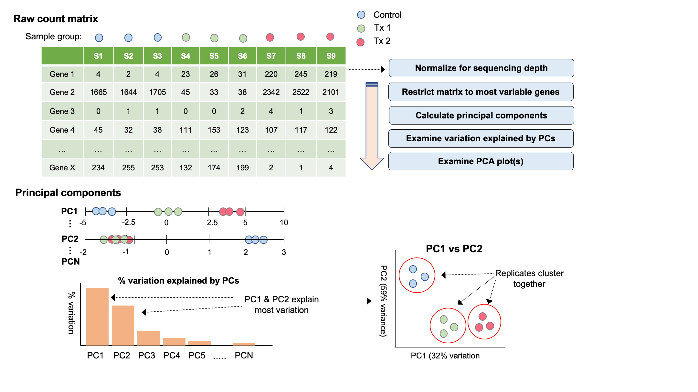
StatQuest has an excellent video that explains the fundamental concepts of PCA, and provides more details how on the PCs themselves are calculated.
Performing PCA on RNA-seq data
To perform mathematical procedures such as PCA, it is best to transform the raw counts. DESeq2 provides its own transformation procedure, called the regularized logarithm (rlog) implemented with the rlog() function. The rlog is similar in principle to a standard log transformation of the data, but is able to more appropriately transform the counts for genes with low expression values.
It is important to note that rlog() transformed values incorporates the size factors calculated for DESeq2 normalization of sequencing depth, therefore rlog values are comparable between samples.
DESeq2 is also capable of implementing the popular variance stabilizing transformation (VST) for count data, which is generally recommended for larger datasets due to increased speed.
To begin, we will remove genes with less than 10 reads across all samples, as there isn’t enough data for these genes to provide meaningful information in these analyses.
# drop genes with low counts
keep <- rowSums(counts(dds)) >= 10
dds <- dds[keep,]
# check the new dimensions
dim(dds)
Now use the rlog() function to implement the regularized logarithm procedure on our data.
rld <- rlog(dds, blind = FALSE)
# check first few rows
head(assay(rld))
We can illustrate the benefit of using the rlog over standard log transformation (+ a pseudo-count for genes with 0 counts where the log of 0 is infinity) by comparing the transformed values for two samples against each other.
# set plotting window to 1 row vs 2 columns
par(mfrow=c(1,2))
# plot standard log counts
cts <- counts(dds, normalized=FALSE)
plot(log2(cts[,1]+1), log2(cts[,2]+1), col = "cornflowerblue", xlab = "Sample 1", ylab = "Sample 2", main = "Log2 + 1")
# plot rlog counts
plot(assay(rld)[,1], assay(rld)[,2], col = "indianred", xlab = "Sample 1", ylab = "Sample 2", main = "rlog")
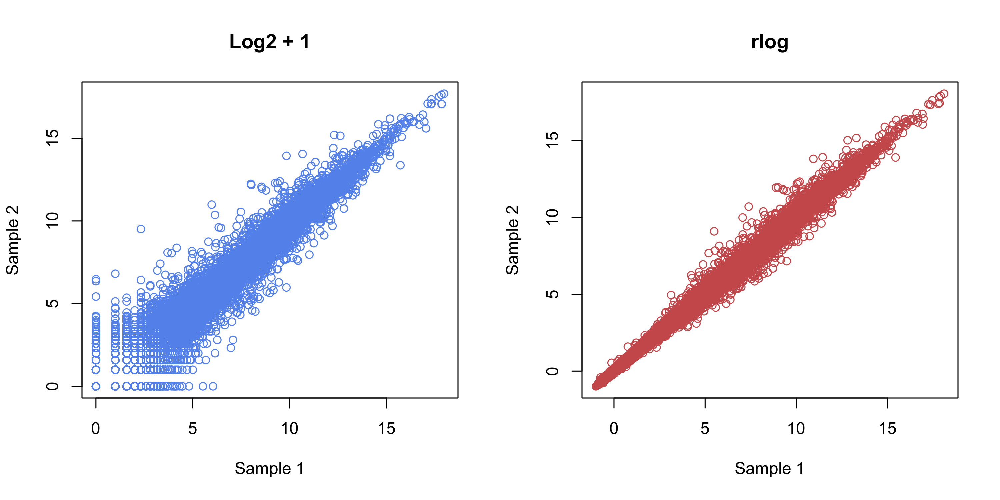
To perform PCA, we need to select a set of features (genes) that vary across the samples, and therefore provide information about the differences between samples. Genes that do not vary between samples are not informative for these analysis.
To identify the most variable genes in the dataset, we can calculate the variance (i.e. a measure of spread/standard deviation squared) of the transformed counts for each gene across all samples in the dataset.
# calculate gene expression level variance between samples
var <- rev(rowVars(assay(rld))[order(rowVars(assay(rld)))])
# reset plotting window to 1 row vs 1 columns
par(mfrow=c(1,1))
# plot variance for genes accross samples
plot(var,
las = 1,
main="Sample gene expression variance",
xlab = "Gene", ylab = "Variance")
# add vertical lines at specific gene number indexes
abline(v=1000, col="red")
abline(v=500, col="green")
abline(v=250, col="blue")
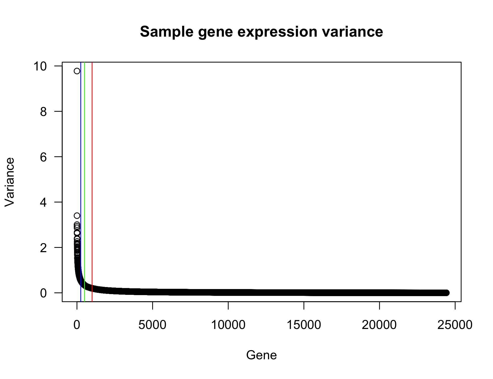
At around 500 the variance starts to increase more dramatically, so it would be reasonable to select these as the 'variable features' for the PCA.
# Set a variable for the number of genes (features) to be used for PCA and clustering.
var_feature_n <- 500
# calculate the row variance
rv <- rowVars(assay(rld))
# order variance and select the rows (genes) with the most variance
select <- order(rv, decreasing = TRUE)[1:var_feature_n]
# subset rlog values for genes by top variance ranks
rld_sub <- assay(rld)[select, ]
# transpose the matrix (rows to columns and columns to rows)
rld_sub <- t(rld_sub)
# run principal components analysis
pca <- prcomp(rld_sub)
# extract the variance explained by each PC
percentVar <- pca$sdev^2/sum(pca$sdev^2)
# subset for first 5 elemets
percentVar <- percentVar[1:5]
# add names to the percentVar vector
names(percentVar) <- c("PC1", "PC2", "PC3", "PC4", "PC5")
# plot variance for top 5 PCs
barplot(percentVar, col = "indianred", las = 1, ylab = "% Variance", cex.lab = 1.2)
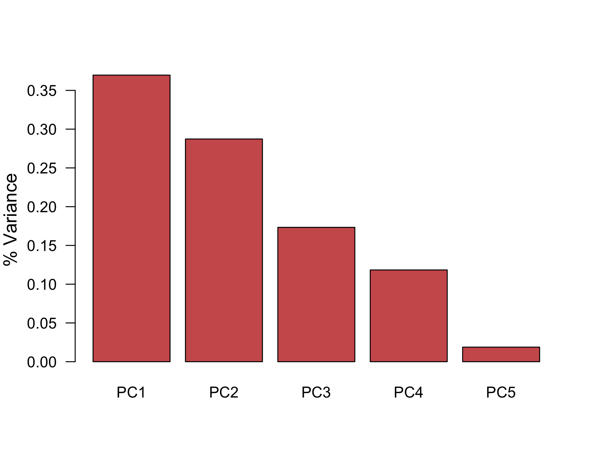
We can see that the majority of variance in this dataset is explained by the first few PCs, therefore a plot comparing PC1 vs PC2 will be sufficient to explore the differences in overall gene expression between these samples.
# construct data frame w/ PC loadings and add sample labels
pca_df <- as.data.frame(pca$x)
# add a column containing tx group
pca_df$tx.group <- dds@colData$tx.group
# add column containing sample IDs
pca_df$sample_ids <- colnames(dds)
# add colors for plotting to df
pca_df$col <- NA
for(i in 1:length(levels(pca_df$tx.group))){
ind1 <- which(pca_df$tx.group == levels(pca_df$tx.group)[i])
pca_df$col[ind1] <- i
}
# plot PC1 vs PC2
plot(pca_df[, 1], pca_df[, 2],
xlab = paste0("PC1 (", (round(percentVar[1], digits=3)*100), "% variance)"),
ylab = paste0("PC2 (", (round(percentVar[2], digits=3)*100), "% variance)"),
main=paste0("PC1 vs PC2 for ", var_feature_n, " most variable genes"),
pch=16, cex=1.35, cex.lab=1.3, cex.axis = 1.15, las=1,
panel.first = grid(),
col=pca_df$col)
# add sample names to data points
text((pca_df[, 2])~(pca_df[, 1]), labels = pca_df$tx.group, cex=0.6, font=2, pos=4)
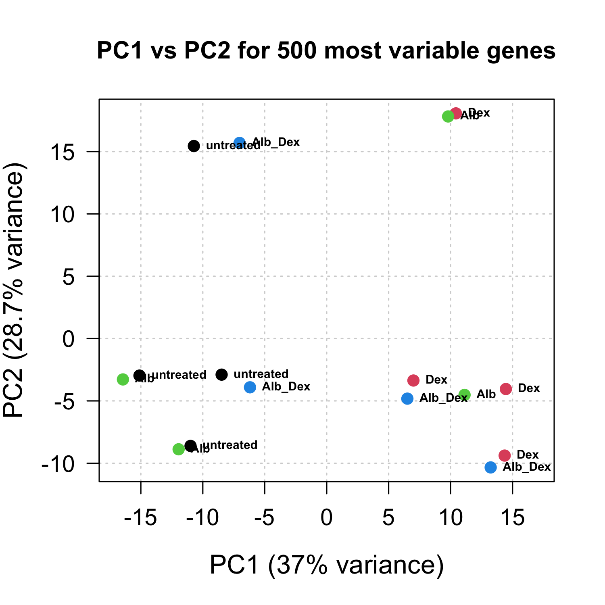
Interpretation
-
Most of the samples appear to cluster by treatment group. For example, untreated samples generally have much lower PC1 values than all the Dex samples, suggesting that some of the largest variability in gene expression differences between samples in this dataset explains differences between untreated and Dex treated samples. Therefore we expect the most substantial differential expression to be found for the untreated vs Dex analysis.
-
The Alb treated samples, and the co-treated samples (Alb\Dex) do not seem to consistently cluster along PC1 and PC2. One explanation for this could be that treatment with Alb or co-treatment with Alb & Dex have inconsistent effects on gene expression. This is often the case with in vivo model systems, which often demonstrate more inherent variability, and may require more replicates to confidently determine if a trend exists or not.
Batch effect detection with PCA
Another explanation could be there is variable, unrelated to the experimental groups, that explains a lot of the sample-to-sample variability, such as a batch effect. Batch effects are non biological variables that alter the overall representation of data from an experiment, and if left unidentified, can lead to many incorrect conclusions about the results.
One common reason for batch effects is that samples that were processed in separate batches, and variability between the sample processing between the batches resulted in detectable changes in gene expression.
Multiple batches were not reported in the manuscript for this dataset, however, to demonstrate what you would expect to see if a true batch effect existed, we will artificially introduce one by labelling specific samples as Batch 1 or Batch 2. We can re-generate the PCA plot and include symbols to denote which batch a sample was processed in.
# add variable to PCA dataframe for batch
pca_df$batch <- NA
# (artificially) select samples with a PC2 value below 10 to batch 1
pca_df$batch[pca_df$PC2 < 10] <- "Batch 1"
# (artificially) select samples with a PC2 value above 10 to batch 2
pca_df$batch[pca_df$PC2 > 10] <- "Batch 2"
# convert string to factor
pca_df$batch <- factor(pca_df$batch, levels = c("Batch 1", "Batch 2"))
# plot PC1 vs PC2 but only for batch 1 samples
plot(pca_df[pca_df$batch=="Batch 1", 1], pca_df[pca_df$batch=="Batch 1", 2],
xlab = paste0("PC1 (", (round(percentVar[1], digits=3)*100), "% variance)"),
ylab = paste0("PC2 (", (round(percentVar[2], digits=3)*100), "% variance)"),
main=paste0("PC1 vs PC2 for ", var_feature_n, " most variable genes"),
pch=16, cex=1.35, cex.lab=1.3, cex.axis = 1.15, las=1,
panel.first = grid(),
col=pca_df$col,
ylim=c(-14,20))
# add points for batch 2 samples but use different shape to denote batch
points(pca_df[pca_df$batch=="Batch 2", 1], pca_df[pca_df$batch=="Batch 2", 2],
col=pca_df$col,
pch=2, cex=1.35)
# add legend
legend(9.5, 10.5, levels(pca_df$batch), pch = c(16, 2))
legend(1.5, 11.5, levels(pca_df$tx.group), pch = 16, col = pca_df$col)
# add sample names as text to points
text((pca_df[, 2])~(pca_df[, 1]), labels = pca_df$tx.group, cex=0.6, font=2, pos=4)
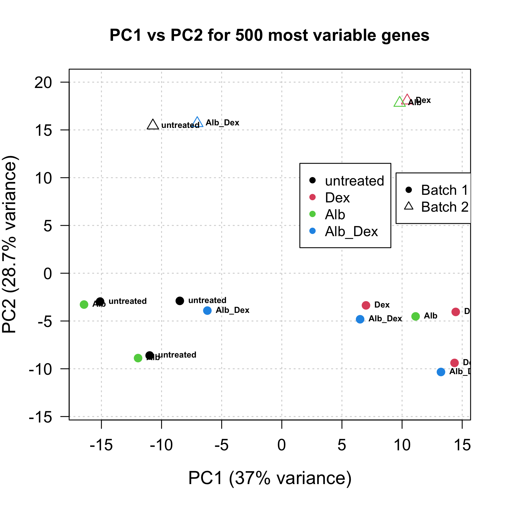
Interpretation
The four samples labelled as batch 2 clearly cluster separately on PC2 from the rest of the samples, suggesting that batch is deterministic of gene expression profiles in these data. Consequently, these samples in Batch 2 will increase the within-group variance between samples, leading to a loss of statistical power in the DE analysis, and ultimately reducing the number of DE genes we could detect.
Dealing with a batch effect
A comprehensive introduction of how to correct for a batch effect is beyond the scope of this workshop, however, a couple of basic options you could explore if you detect a batch effect are included below.
- statistically remove the batch effect from your data using an algorithm designed specifically for this task. e.g. ComBat
- adjust for batch as a variable in your statistical model when running differential expression
- remove the samples driving the batch effect, provided you have a good reason to suspect specific samples
Deciding on which approach to take is a complicated issue, and is largely dependent on the extent of the batch effect. If the batch effect is very large, it may be too difficult to effectively remove it statistically, or regress out variation attributable to it in the DE analysis.
Ultimately, the easiest way to handle a batch effect is to prevent it from ever occurring. Where possible, practice your protocol and confirm you can get consistent replicates before committing to the full experiment.
Take home message on batch effects: If your experiment includes multiple batches, check them in your unsupervised analyses to check for a batch effect.
Part 2: Unsupervised hierarchical clustering
Hierarchical clustering is complimentary to approaches like PCA, and is used to assess relationships between samples and features (e.g. genes) in a dataset. Visualizing these relationships provides insight into which samples are most similar/dissimilar, as well as identify genes that changes in similar ways across a dataset.
Both supervised and unsupervised clustering methods exist, however unsupervised methods are generally used when we have no prior expectation for groups (clusters) that should exist in the data. To generate clusters, a distance metric is calculated, where smaller values represent more similar samples, which are grouped together into clusters. A dendrogram is used to represent the relationships between samples, as determined during the clustering process. The results are commonly visualized using a heatmap.
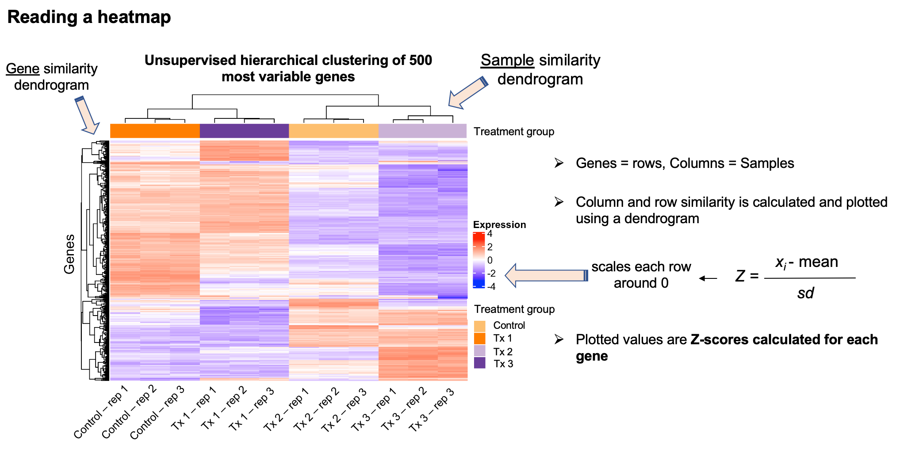
Expression levels of each gene determine the colors shown in each cell of the heatmaps, and allow us to identify genes expressed at different levels across samples. If both columns and rows are clustered, samples which share similar expression profiles will be placed closer to each other on the dendrogram, while genes that demonstrate similar patterns of variation across sample will be placed closer together, allowing us to identify modules of co-varying genes.
Although we will not go into detail on how the clustering algorithm works, StatQuest has an excellent video that explains the process in more detail, as well as another video that summarizes the process of drawing and interpreting heatmaps.
Distance metrics
Several distance metrics exist (e.g. Euclidean distance, Manhattan distance) and are calculated differently. Although the results will often be the same across several distance metrics, which one is most appropriate depends on your dataset.
Cluster the dataset using unsupervised clustering
Similarly to the PCA, we perform the clustering using the rlog transformed data and the 500 most variable features, as features that do not vary across samples are not informative for dimension reduction approaches.
# select top X no. of variable genes
topVarGenes <- head(order(rowVars(assay(rld)), decreasing=TRUE), var_feature_n)
# set up gene expression matrix
mat1 <- assay(rld)[topVarGenes,]
# set up colors for heatmap
col = colorRamp2(c(0, 9, 18), c("blue", "white", "red"))
cols1 <- brewer.pal(11, "Paired")
# set up annotation bar for samples
ha1 = HeatmapAnnotation(Group = colData(dds)$tx.group,
col = list(Group = c("untreated" = cols1[1],
"Dex" = cols1[2],
"Alb" = cols1[5],
"Alb_Dex" = cols1[6])),
show_legend = TRUE)
# se up column annotation labels (samples)
ha = columnAnnotation(x = anno_text(colData(dds)$SRR,
which="column", rot = 45,
gp = gpar(fontsize = 10)))
# generate heatmap object
ht1 = Heatmap(mat1,
name = "Expression",
col = col,
top_annotation = c(ha1),
bottom_annotation = c(ha),
show_row_names = FALSE,
show_column_names = FALSE)
# plot the heatmap
draw(ht1, row_title = "Genes", column_title = "Top 500 most variable genes")
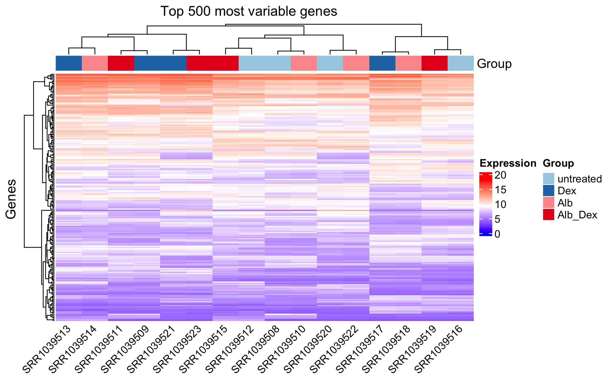
As we saw in the PCA, the Alb and co-treated samples do not form any clear clusters. We may want to remove them and perform the clustering again so that we can compare the untreated and Dex samples more easily.
# select sample groups to keep
ind_to_keep <- c(which(colData(rld)$group=="untreated"), which(colData(rld)$group=="Dex"))
# select top variable features
topVarGenes <- head(order(rowVars(assay(rld)[,ind_to_keep]), decreasing=TRUE), var_feature_n)
# set up gene expression matrix
mat1 <- assay(rld)[topVarGenes, ind_to_keep]
# set up colors for heatmap
col = colorRamp2(c(0, 9, 18), c("blue", "white", "red"))
cols1 <- brewer.pal(11, "Paired")
# subset coldata for samples in untx and ex groups
colData_sub <- colData(dds)[ind_to_keep, ]
# set up annotation bar for samples
ha1 = HeatmapAnnotation(Group = colData_sub$tx.group,
col = list(Group = c("untreated" = cols1[1],
"Dex" = cols1[2])),
show_legend = TRUE)
# se up column annotation labels (samples)
ha = columnAnnotation(x = anno_text(colData_sub$SRR,
which="column", rot = 45,
gp = gpar(fontsize = 10)))
# generate heatmap object
ht1 = Heatmap(mat1, name = "Expression", col = col,
top_annotation = c(ha1),
bottom_annotation = c(ha),
show_row_names = FALSE,
show_column_names = FALSE)
# plot the heatmap
draw(ht1, row_title = "Genes", column_title = "Top 500 most variable genes")
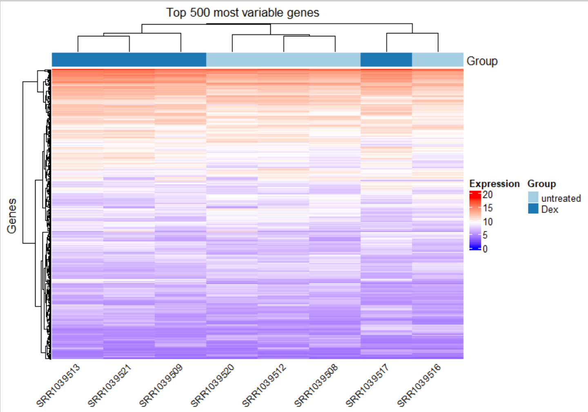
There does appear to be reasonable clustering between untreated and Dex samples, suggesting there are unique gene expression programs defining the Dex samples from the untreated. However, one of these samples in the Dex group seems to be clustered further away from the other Dex samples. This could be the Dex treated sample that clustered away from the other Dex treated samples on the PCA. We can add an annotation bar for the fake batch effect we created earlier to this plot to confirm this.
# Find the identity of the 'batch 2' samples for the untreated and Dex samples
pca_df$sample_ids[pca_df$PC2 > 10 & pca_df$tx.group=="untreated"]
pca_df$sample_ids[pca_df$PC2 > 10 & pca_df$tx.group=="Dex"]
# set the batch variable for these samples as batch 2, and all others to batch 1
colData_sub$batch <- "Batch 1"
colData_sub$batch[colData_sub$SRR=="SRR1039516"] <- "Batch 2"
colData_sub$batch[colData_sub$SRR=="SRR1039517"] <- "Batch 2"
# add a second color palate to annotate batch
cols2 <- brewer.pal(3, "Greens")
# set up annotation bar for samples
ha1 = HeatmapAnnotation(group = c(as.character(colData_sub$tx.group)),
batch = c(as.character(colData_sub$batch)),
col = list(group = c("untreated" = cols1[1], "Dex" = cols1[2]),
batch = c("Batch 1" = cols2[2], "Batch 2" = cols2[3])),
show_legend = TRUE)
# generate heatmap object
ht2 = Heatmap(mat1, name = "Expression", col = col,
top_annotation = c(ha1),
bottom_annotation = c(ha),
show_row_names = FALSE,
show_column_names = FALSE)
# plot the heatmap
draw(ht2, row_title = "Genes", column_title = "Top 500 most variable genes")
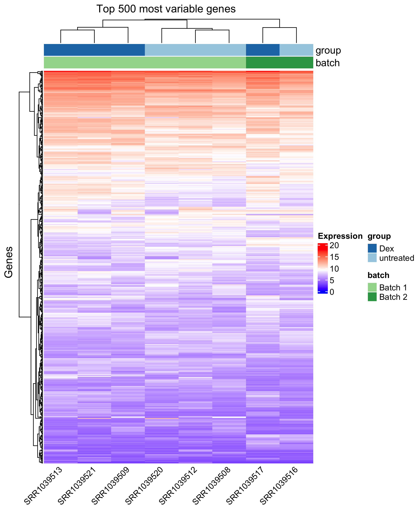
Based on our newly labeled plot it does seem that these 2 samples are
outliers, supporting the presence of a potentially non-biological factor affecting gene expression in these data (such as a batch effect).
Scaling the heatmap
In the above examples, the color of each field in the heatmap is defined by the normalized expression value (higher expression in red, lower expression in blue). This allows us to compare more easily between genes and identify those with higher expression levels.
However, presenting the data this way can make it hard to see differences in expression between the samples (heatmap columns). To make sample-specific differences in expression easier to identify, we can standardize the expression values for each gene using Z-score scaling.
Z-score scaling transforms the expression levels for each gene onto the standard normal distribution (mean = 0, standard deviation = 1). Z-scores are calculated by subtracting the mean from each expression value and dividing by the mean, and tell us how many standard deviations an expression value is above the mean for that gene.
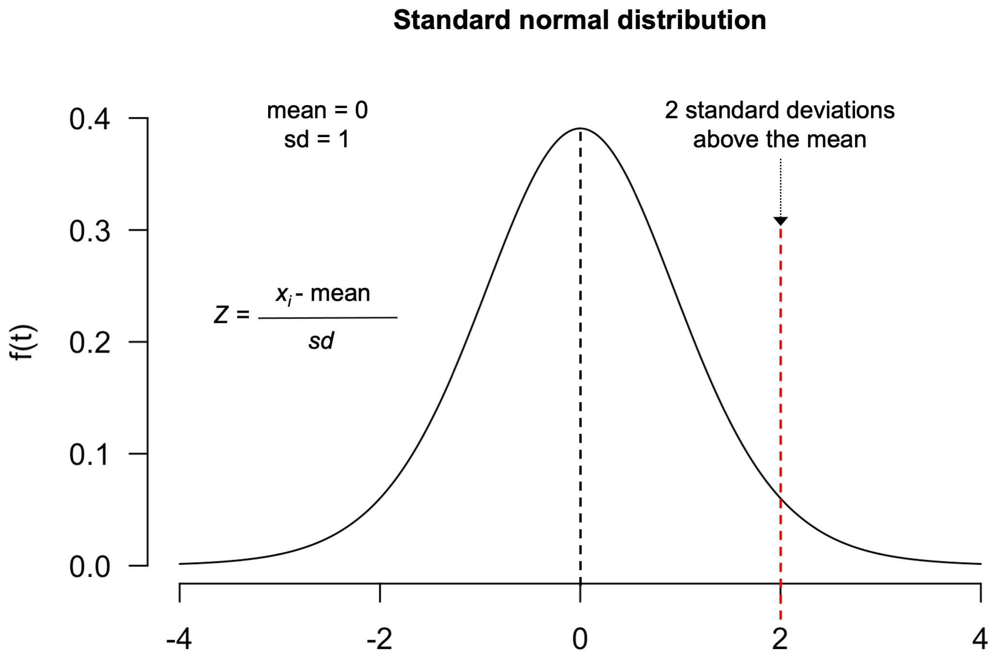
Scaling gives us expression values for each gene that are all on the same scale, allowing us to more easily visualize changes in the expression of each gene between samples.
Use R to scale the expression matrix and re-plot the heatmap:
# scale matrix by each row
mat_scaled = t(apply(mat1, 1, scale))
# set up colors for heatmap
col = colorRamp2(c(-3, 0, 3), c("blue", "white", "red"))
# generate heatmap object
ht1 = Heatmap(mat_scaled, name = "Expression", col = col,
top_annotation = c(ha1),
bottom_annotation = c(ha),
show_row_names = FALSE,
show_column_names = FALSE)
draw(ht1, row_title = "Genes", column_title = "Top 500 most variable genes")
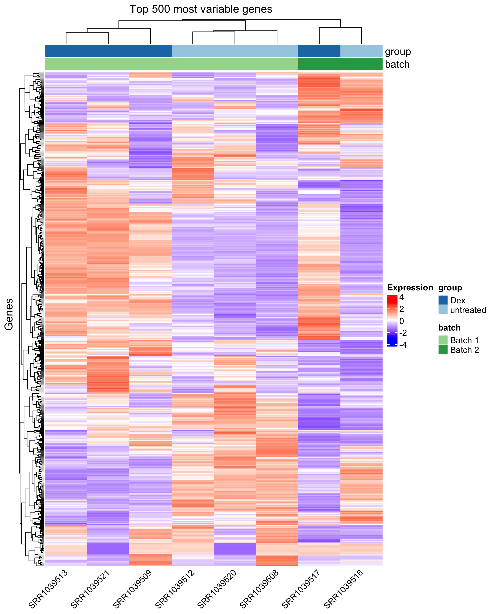
Note that through scaling, we lose information about the expression abundance of each gene relative to any other gene (we can’t tell which genes are highly expressed, and which are lowly expressed.) Therefore, it can sometimes be helpful to visualize your data both ways, scaled and unscaled.
Fundamental Statistics for DE
02 - Fundamental statistics for Differential Expression analysis
Learning objectives:
- Understand the basic principles of statistical hypothesis testing
- Understand the multiple testing problem and why it must be corrected for in genomic data analysis
- Learn how to implement basic multiple testing procedures in R
Introduction
RNA-seq analysis, like many things in bioinformatics, draws on knowledge from multiple disciplines, all of which are required to effectively make inferences from a dataset. In particular, downstream analyses, such as differential gene expression, requires working knowledge of basic statistics.
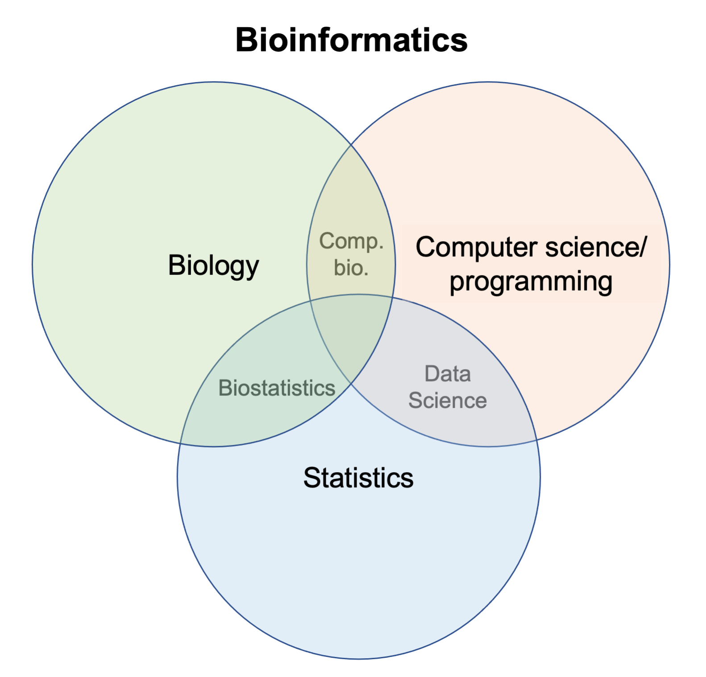
There are several key aspects of basic statistics that we must understand to effectively perform a differential expression analysis:
- Hypothesis testing
- Multiple testing correction
- Linear modeling
The following lesson should not be considered a comprehensive introduction to these topics, but rather a platform from which to further your understanding in the future.
Part 1: Hypothesis testing
In bioinformatic data analysis, we often conduct hypothesis testing to assess how meaningful our results are. For example, in RNA-seq analysis, we would like to know which genes showed meaningfully different gene expression between the experimental groups. Hypothesis testing describes the statistical framework that we use to assess how meaningful our results are.
General procedure for hypothesis testing:
1. Decide on the null hypothesis (H0)
2. Use the sample data to calculate a test statistic
3. Use the test-statistic to calculate a P-value
4. Reject the null hypothesis if P-value is below your a priori threshold
To help understand this procedure, here are some useful definitions:
- Null hypothesis (H0) - the hypothesis that there is no meaningful difference between our samples
- alternative hypothesis (HA) there is a meaningful difference between our samples
- test-statistic - quantity determined from your dataset comparing your results to those you would expect under the null hypothesis (that is, no true difference exists)
- P-value* - probability of observing data equal to or more extreme than that observed due to chance
When performing hypothesis testing, we assume our data come from a distribution with a known area. By calculating quantities from our data (e.g. mean, standard deviation, sample size) we can use this distribution to calculate the test-statistic. As defined above, this statistic compares our data to a known distribution and tells us how extreme our result is to the null distribution.
Several types of test-statistics exist, and which one we use depends on the type of data we have and the assumptions we make about it. In the example below, we will use the t-statistic, which is based on the t-distribution (shown below, similar to a normal dist.).

Degrees of freedom (df) represent the number of independent values that can vary in a dataset, and is calculated as the sample size (N) - 1. The number of degrees of freedom affects the shape of the t-distribution, as shown in the figure above.
You can learn more about degrees of freedom here.
Assuming a t-distribution, the t-statistic can be calculated from your dataset using the equation:
t-statistic = (xi - μ) / (s x sqrt(n))
Where:
- xi = sample mean (i denotes this is calculated for each sample)
- μ = population mean
- s = standard deviation
- n = sample size
Placing our test-statistic on the t-distribution (red dotted line in figure below) allows us to see how extreme our result is compared to the null distribution. Larger test-statistics will be further toward the tails of distribution.
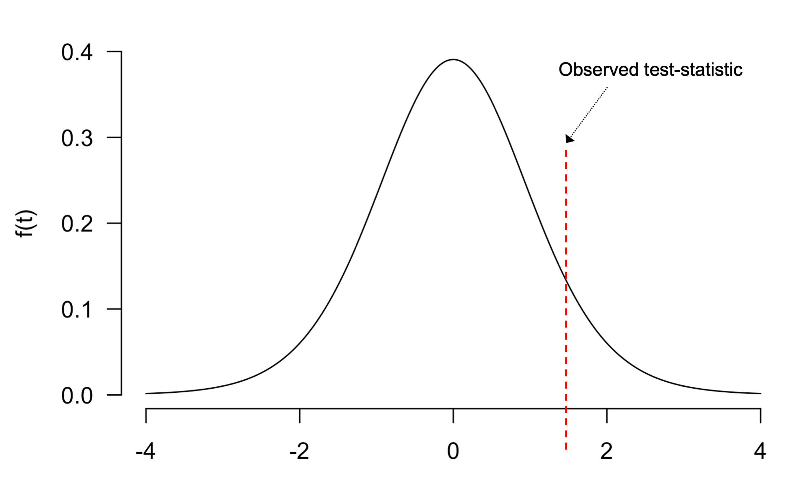
To help us decide if the null hypothesis should be rejected or accepted based on this test-statistic, we must calculate a P-value, defined as the probability of observing data equal to or more extreme than that observed due to chance.
It is sometimes helpful to consider P-values as a %, for example, if you have a P-value of 0.01, there is a 1% chance that your results occurred simply by chance (i.e. randomly). Alternatively, a P-value of 0.9 means there is a 90% chance that this result would be observed by chance.
Visually, the P-value is defined as the area under the curve to the right or left of the test-statistic (provided you run a two-tailed test).
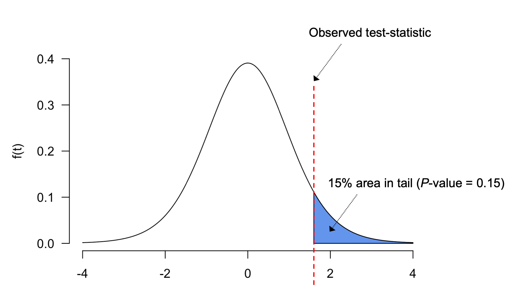
The tails of the t-distribution contain the least area, therefore obtaining a large t-statistic simply due to chance is less likely, suggesting a result is extreme enough to reject the null hypothesis (that no true difference exists between our experimental groups).
If we assume a P-value threshold of 0.05 (& a two-tailed test), our test-statistic must be large enough that less than 2.5% of the density under the curve is to the right or left of our this value.
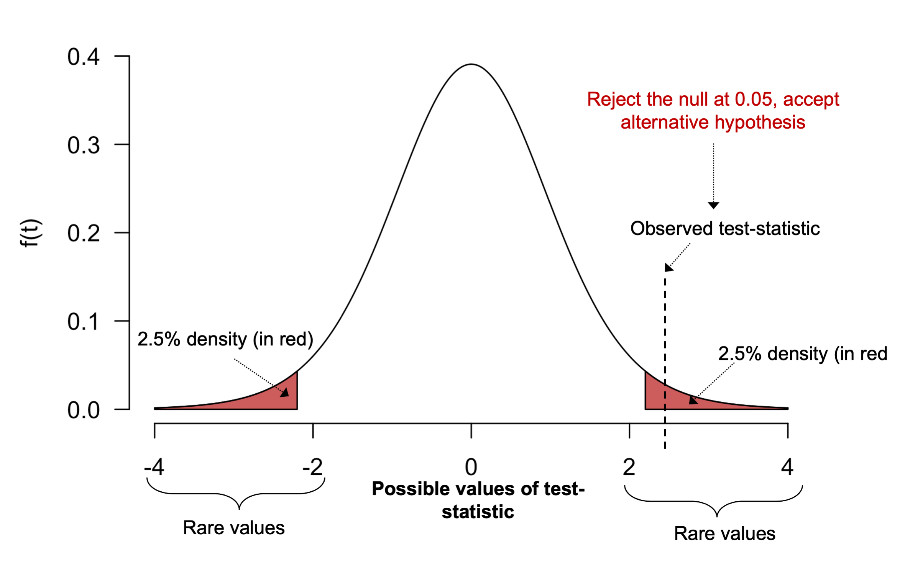
In this figure, the test-statistic is large enough that the area under the curve represents a P-value < 0.05, therefore we can reject the null hypothesis and accept the alternative hypothesis, that a there is significant difference between our comparison groups.
If the test-statistic was not large enough, and the P-value was >0.05, we would need to accept the null hypothesis that no significant difference exists.
P-value thresholds: Although 5% is a commonly used P-value threshold, you can be more or less stringent depending on the nature of your experiment: if you want to be very conservative and restrict your results to few results that are likely to be true positives, you may wish to restrict the results to a more stringent threshold. If your experiment is very preliminary and you care less about capturing some false positives than missing true positives, you may wish to relax your threshold.
Part 2: The multiple testing problem
In RNA-seq, we measure thousands of genes simultaneously and run a statistical test for each of them when trying to identify those that are differentially expressed across conditions.
As we defined above, P-values are the probability of observing data equal to or more extreme than that observed due to chance. Therefore, by definition, if we use 0.05 as a P-value threshold, and test 20,000 genes for differential expression, by definition 5% of those genes will have a log2 fold-change that large simply due to chance. 5% of 20,000 is 1000 genes, which is obviously an unacceptable amount of false-positives...
We can classify the different types of errors and decisions we make during hypothesis testing according to how they fit with the actual truth observed in nature, as shown in the below table.

- False positives are generally referred to as Type I error.
- False-negatives are referred to as Type II error.
As we discussed above, at a 5% significance level, there is a 5% chance of rejecting the null by mistake (committing a type I error). As we perform more and more tests, the number of times we mistakenly reject the null will increase, causing us to make more and more false-positive claims.
We can demonstrate the multiple testing problem by simulating some very simple data that come from exactly the same distribution, and therefore should have no significant differences between them, so we should never reject the null in theory.
# generate an empty vector to store P-values in
p.value <- c()
# generate 2 random variables (r.v.s) 1000 times and run a t.test on each pair of r.v.s
# the r.v.s will have the same mean and distribution
for(i in 1:1000){
# simulate random variables
x <- rnorm(n = 20, mean = 0, sd = 1)
y <- rnorm(n = 20, mean = 0, sd = 1)
# run t.test and extract p-value
p.value[i] <- t.test(x, y)$p.value
}
# count number of P-values less than our alpha
table(p.value < 0.05)
# order vector of P-values
p.value <- p.value[order(p.value)]
# visualize P-value magnitude
plot(-log10(p.value), las = 1,
col = "cornflowerblue",
main = "-log 10 P-values",
xlab = "ordered P-values")
#### Note: taking -log10 of small number gives big number!
# add a horizontal line
abline(h=-log10(0.05), col = "red", lty = 2)
# add some useful labels
text(600, 1.5, "Small P-values higher up")
text(600, 1.1, "Large P-values lower down")
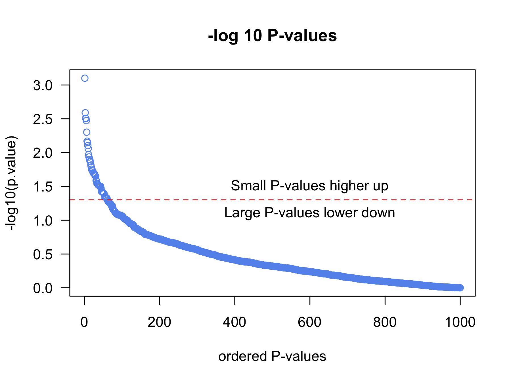
Roughly 5% of the time, we commit a type I error. Left unchecked in genomics and bioinformatics studies, this error would cause a vast number of findings to be attributable to noise.
Part 3: Methods for multiple testing correction
We address the multiple testing problem through multiple testing correction, which describes a number of statistical approaches for controlling the type I error rate, preventing us from making a large number of false positive claims.
Bonferroni correction
The simplest multiple testing correction method is the Bonferonni correction, which seeks to control the family-wise error rate (FWER): the probability of making at least 1 false positive claim.
To control for the FWER, the α threshold you have chosen for your experiment is divided by the number of tests performed, and any P-value must achieve significance below this threshold to be described as significant. In our example above where we ran 1000 tests at a 5% significance level, the correct alpha would be 0.05/1000 = 5e-5, so any P-value needs to be < 5e-5 to be deemed significant.
We can demonstrate this by plotting the Bonferonni threshold on the plot for our previous example:
# visualize P-value magnitude
plot(-log10(p.value), las = 1,
col = "cornflowerblue",
main = "-log 10 P-values",
xlab = "ordered P-values", ylim = c(0,5))
# add a horizontal line
abline(h=-log10(0.05), col = "red", lty = 2)
text(600, 4.5, "Bonferroni")
# add a horizontal line
abline(h=-log10(0.05/1000), col = "red", lty = 2)
text(600, 1.5, "Original threshold")

We can also calculate a new set of P-values that have been adjusted by the Bonferonni method (P-values are multiplied by the number of comparisons), which can be evaluated at the 0.05 significance value.
# bonferroni correction
p.adj.bonf <- p.adjust(p.value, method = "bonferroni")
p.adj.bonf
# check if any are signifciant
table(p.adj.bonf < 0.05)
By definition, Bonferroni correction guards against making even 1 false-positive, which is often too conservative in genomics experiments where we are using trying to generate new hypotheses in an exploratory fashion. Consequently, we often use other multiple testing correction methods in genomics, such as the false discovery rate (FDR).
False discovery rate
The false discovery rate (FDR) is a less conservative method of multiple testing correction, and can therefore be more powerful in genomics experiments, as it will lead to fewer false-negatives, at the expense of increased false positives (compared to Bonferroni).
FDR is defined as the proportion of false discoveries among all significant results. Controlling the false discovery rate at 5% means we accept 1 in 20 of the results we call significant, are actually false positives.

To control for the FDR, we can use a list of P-values to calculate a q-value for each of these P-values in our list. A q-value for a specific test is defined as expected proportion of false-positives among all features called as or more extreme than the one in question.
For example, if an individual gene for an RNA-seq differential expression analysis has a q-value of 0.01, this means 1% of genes with a lower significance value than this gene will be false-positives.
You can calculate q-values using the Bioconductor package qvalue.
# load the qvalue package
#BiocManager::install("qvalue")
library(qvalue)
qvalue(p.value)$qvalues
p.adj.fdr <- qvalue(p.value)$qvalues
# check how many are sig.
table(p.adj.fdr < 0.05)
No results were identified as significant after correcting for multiple testing, which is what we expected should be true since we drew our random samples from the exact same distributions.
This example highlights the short coming of hypothesis testing approaches, and demonstrates how important it is to correct for multiple hypothesis testing. Always perform multiple testing correction.
A good summary of multiple testing correction in high throughput genomics experiments can be found here. An excellent video describing the FDR-based methods can be found here by StatQuest.
FDR correction is often favourable in RNA-seq differential expression analysis as we are often interested in being less conservative and generating new hypothesis. DESeq2 performs multiple testing correction by default using FDR correction. We will demonstrate how the corrected P-values can be extracted from the results in a following lesson.
Linear Modeling
03 - Introduction to linear models
Learning objectives:
- Understand the basic principles of linear models and why they are useful in RNA-seq DE analysis
- Learn how to fit basic linear models in R
Introduction
Simple linear models, or linear regression, is used pervasively in bioinformatics and genomics for statistical inference. Linear models are relatively simple, flexible, and interpretable, meaning they make excellent tools for statistical inference and they scale well to thousands of observations, which is critical for common genomics datasets.
Beyond differential expression analysis, many types of genomic data analysis rely on linear models:
- ChIP-seq (differential binding)
- ATAC-seq (differential accessibility)
- Microarray analysis (e.g. DNA methylation)
- Variant identification (WES/WGS/RNA-seq)
- Genome-wide association studies (GWAS)
When performing differential expression analysis with popular R-packages such as DESeq2, you usually do not need to explicitly define a linear model yourself using base functions in R. However, it is important that you understand what is going on 'under the hood' in order to always perform your analysis correctly.
In the lesson below, we will introduce the basic concepts of linear models and how they can be fit in R, in order to provide you with a foundation upon which to begin learning the basics of differential expression analysis.
NOTE: Linear modeling is the topic of entire independent courses and again requires knowledge of appropriate mathematics and probability to understand completely. Thus, this should be considered an introduction rather than a standalone resource.
Part 1 - Basic terminology
In a standard linear model, we assume that some response variable (Y) can be represented as a linear combination of a set of predictors (X, independent variables). In building a linear model, we estimate a set of coefficients that explain how the predictors are related to the response. We can use these coefficients for statistical inference to better understand which predictors are associated with our response, or for applying the model to new data where we wish to predict the response variable using only a set of predictors.
Before reviewing the statistical notation for a simple linear model, it can be useful to first consider the main components:
response = predictor(s) + error
-
The response is the dependent variable we wish to model based on some set of predictors (Y)
-
The predictor(s) is the independent variable, or variables, that we wish to model as a linear combination of the response (this is usually what we are interested in for statistical inference and hypothesis testing) (X)
-
The error component represents the information not explained by the model, and exists since we know that no set of predictors will perfectly explain the response variable. These are often referred to as the residuals of the model.
Using the statistical notation for a simple linear regression model:
Y = β0 + βi Xi + ε
- Y is a continuous response variable that we assume is normally distributed
- βi are the coefficients to be estimated (βi-value)
- Xi are the predictors
- β0 refers to the model intercept
- ε refers to the error term (residuals) and are assumed to follow a normal distribution
There can be any (reasonable) number of predictors (X) in a model, and predictors can be either continuous (e.g. age) or categorical (e.g. treatment group, batch).
Each predictor is associated with a coefficient that describes the relationship of that predictor to the response variable. In the context of linear regression, the coefficient is also referred to as the slope.
Part 2 - Linear models in R
In R, the basic syntax for a basic linear model is: lm(response ~ predictor). Lets simulate some data that we can use to illustrate the theory described above and fit out first linear model in R.
# read in the example data
dat <- read.csv("data/lm-example-data.csv", stringsAsFactors=FALSE)
# explore it quickly
head(dat)
str(dat)
# plot
plot(dat$gene_exp ~ dat$hba1c,
ylab = "Expression (Gene X)",
xlab = "Hba1c score",
main = "Gene X exp. vs Hba1c",
col = "indianred", pch = 16, las = 1)
# fit a linear model with gene expression as the response
lm1 <- lm(dat$gene_exp ~ dat$hba1c)
lm1
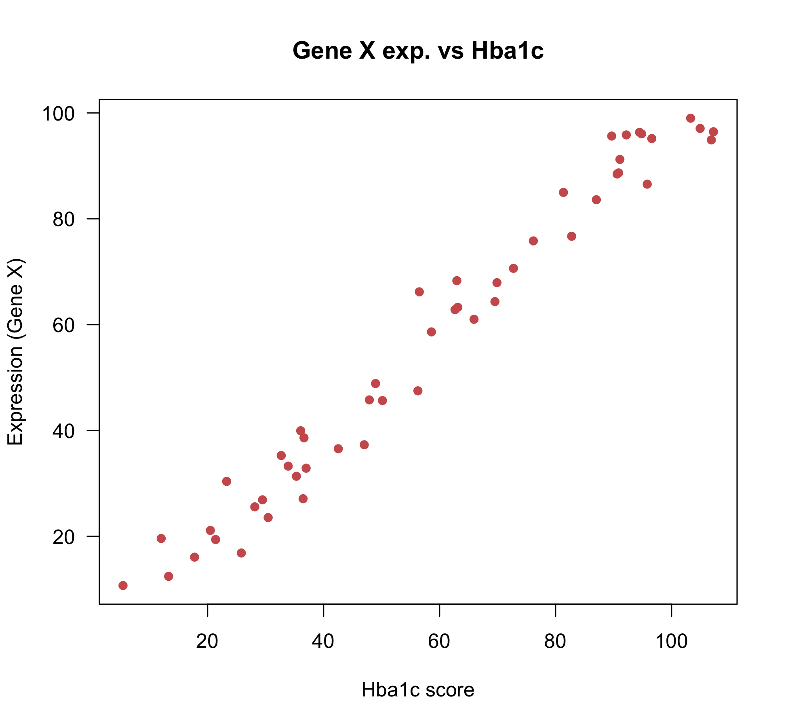
The coefficient for the independent/predictor variable, Hba1c, describes its relation to the response variable, expression of gene X. Here, the coefficient is telling us that for every 1 unit increase in gene expression measured, Hba1c levels increase by ~0.96 units.
This is basic statistical inference, as we have used this procedure to model the relationship between two variables, and infer something about how those variables are related.
To help us better understand the model, we can plot the regression line on our scatterplot.
# generate plot again
plot(dat$gene_exp ~ dat$hba1c,
ylab = "Expression (Gene X)",
xlab = "Hba1c score",
main = "Gene X exp. vs Hba1c",
col = "indianred", pch = 16, las = 1)
# add the model on the scatterplot
abline(lm1, lty=2)
# calculate the predicted gene expression values using the model
pre <- predict(lm1)
# plot the difference between the predicted and the true values
segments(dat$hba1c, dat$gene_exp, dat$hba1c, pre,
col="cornflowerblue")
#### Note: These are the residuals!

The regression line (shown in black) illustrates the clear linear relationship between expression of gene X and Hba1c levels.
The residuals (blue lines) describe how far away each observation (the gene expression values) are from the predicted values from the linear model. All observations are close to the regression line, suggesting the model is a good fit for the data.
However, by virtue of this being a statistical model, all coefficients are estimated with some level of uncertainty. If the model is a poor fit for the data, there will be a high uncertainty in the coefficient.
One way to evaluate how much meaning we should attribute to the coefficient, is to calculate a P-value for it through hypothesis testing, which we will explore below.
Note: Although standard models for modeling gene expression data would include expression values as the response variable, these models usually take on a more complicated form (see note on Generalized linear models below), however we have set up a simple model for teaching purposes.
Part 3 - Hypothesis testing with linear models
In order to test how much certainty we have for a particular coefficient from a linear model, we estimate a quantity called the standard error (SE). Without discussing the underlying statistics that define it, the SE is essentially a measure of certainty around the coefficient, and is dependent on the variance of the residuals (ε).
Importantly, the SE can be used to perform hypothesis testing to determine if the coefficient is statistically significant. In this case, we can test the null hypothesis that the coefficient is equal to zero, using the following equation to calculate the t-score:
t-score = (βi) - 0 / SE(βi)
The t-score can then be used to calculate a P-value, as described in the hypothesis testing section. In R, the summary() function will test all model coefficients against the null hypothesis:
sum_lm1 <- summary(lm1)
sum_lm1
# get the coefficients table
coef(sum_lm1)
# get the coefficients themselves
coef(sum_lm1)[,1]
# get the P-value for the hba1c coefficient
coef(sum_lm1)[2,4]
The P-value is very small, so we can reject the null, and conclude that Hba1c levels are associated with expression of gene X, and interpret the coefficient as a meaningful quantity.
If the P-value does not pass the a priori significance threshold for your analysis, the coefficient should be ignored as that predictor is not associated with the response variable.
You can always confirm by looking at the slope in a simple linear model. To demonstrate this, explore the example below for Gene Y and its relation to Hba1c levels.
# read in the example data
dat2 <- read.csv("data/lm-example-data-geneY.csv", stringsAsFactors=FALSE)
# plot
plot(dat2$gene_exp ~ dat2$hba1c,
ylab = "Expression (Gene Y)",
xlab = "Hba1c score",
main = "Gene Y exp. vs Hba1c",
col = "indianred", pch = 16, las = 1)
# fit a linear model with gene expression as the response
lm1 <- lm(dat2$gene_exp ~ dat2$hba1c)
summary(lm1)
pre <- predict(lm1)
# add the model on the scatterplot
abline(lm1, lty=2)
# plot the difference between the predicted and the true values
segments(dat2$hba1c, dat2$gene_exp, dat2$hba1c, pre, col="cornflowerblue")

The flatter slope of the regression line and larger values of the residuals, suggests there is no useful relationship between Hba1c levels and expression of gene Y, which is supported by the large P-value returned by the model.
Part 4 - Simple Linear modeling with categorical variables
In genomics, we commonly have categorial predictor variables, in contrast to the continuous variable (Hba1c) from our example above. Examples of categorial variables include:
- Wild-type vs knockout
- Vehicle vs treatment
- Control vs diseased
Importantly, linear models are capable of incorporating categorical variables as predictors. Lets consider another example, where we have gene expression levels for gene X measured in 20 healthy tissues, and 20 diseased tissues, and we wish to use a linear model to explore the relationship between gene expression and disease status.
# read in the example data
dat3 <- read.csv("data/lm-example-3.csv", stringsAsFactors=FALSE, row.names = 1)
# quickly explore it
head(dat3)
table(dat3$subject_group)
# Note: Controls are coded as 0, cases are coded as 1
# visualize the data
boxplot(dat3$exp_geneX ~ dat3$subject_group ,
ylab = "Expression (Gene X)",
xlab = "Subject group",
main = "Gene X exp. in subject groups",
col = c("indianred", "cornflowerblue"), pch = 16, las = 1)
# run the linear model and evaluate
lm_2 <- lm(dat3$exp_geneX ~ dat3$subject_group)
summary(lm_2)

Looking at the model output, the P-value is very small, therefore we can conclude that there is an association between expression of gene X and disease status in this sample.
Again, the coefficient tells us about the relationship between the predictor and the response. The coefficient for the predictor subject_group tells us that for each unit increase in this variable, there is an increase of 11.2 expression units for gene X.
Since a 'unit increase' in subject_group simply means controls vs diseased subjects, we can interpret this as the difference in expression between controls and cases. This is analogous to how we would calculate a fold-change value in an RNA-seq analysis.
Part 5 - Multiple regression
We could have simply addressed the above analysis using a more simple statistical test such as a t-test. However, we commonly want to include additional variables in our linear models, and approaches such as the t-test cannot handle this scenario.
For example, we might want to control for factors that could confound gene expression differences between the control and diseased groups. For example, we could control for age and sex of the subjects, or perhaps the batch the samples were collected in.
In this scenario, we can use linear models to control for the additional variables by adding them into the statistical model e.g.
Just an example do not run this code
lm(dat3$exp_geneX ~ dat3$subject_group + dat3$age + dat3$gender + dat3$batch)
This approach is referred to as multiple regression. If you will be doing any sort of complex bioinformatics data analysis involving linear models, I strongly encourage you to use this primer as a starting point to learn more about multiple regression and more complex linear modeling scenarios.
Part 6 - Generalized linear models
While standard linear models are very useful, there are situations where their use is not appropriate, for example:
- when values of Y are restricted (e.g. must be positive integers or binary values, such as with count data from NGS experiments)
- when the variance of Y depends on the mean (such as with RNA-seq data, see below..)
As we have discussed, RNA-seq is measured in terms of read counts, whose values are restricted to being positive integers. If we visualize the distribution of RNA-seq data, we will see that the counts follow a distribution different from the normal distribution.
Plot the distribution of normalized read counts from a single sample:
#reload DESeq2 dds object if not saved from previous lesson
#dds <- readRDS("data/DESeq2.rds")
hist(counts(dds, normalized=FALSE)[,5],
breaks = 500, col="blue",
xlab="Raw expression counts",
ylab="Number of genes",
main = "Count distribution for sample X")
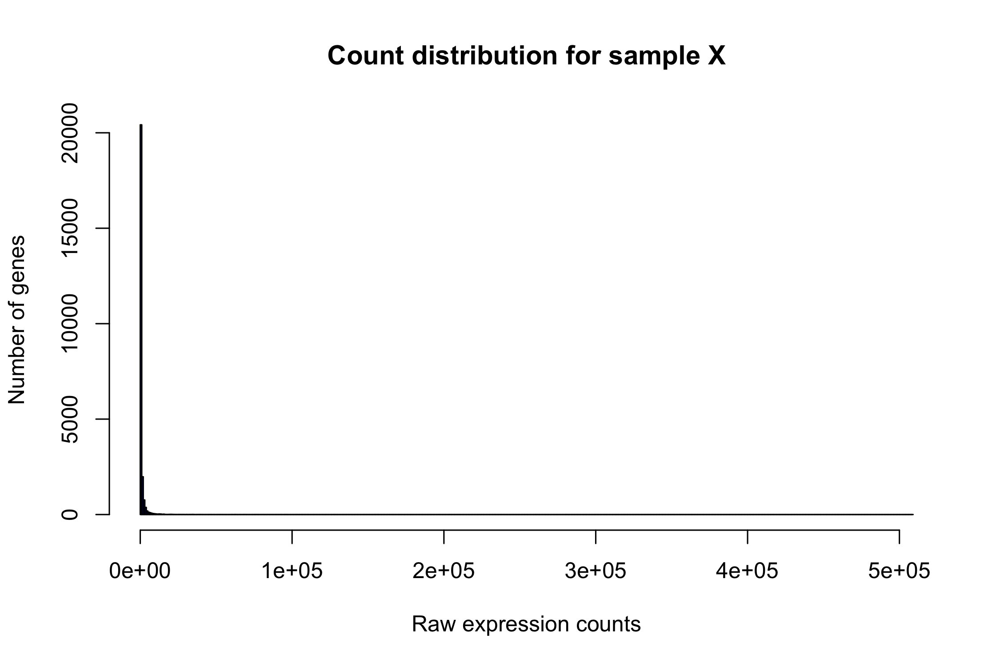
We can easily see that the counts do not follow a normal distribution: most genes have very low count values, with relatively few demonstrating higher expression levels.
Based on this observation, the counts cannot be modeled appropriately using a standard linear model. In fact, bulk RNA-seq data generally exhibit a distribution referred to as the negative-binomial, therefore we must us a model that assumes this distribution when performing differential expression testing. We will discuss this in more detail on Friday.
RNA-seq read counts are also referred to as heteroscedastic, meaning they have a non-constant variance at different values of the mean across samples. We can see this if we plot the variance in read counts across samples against the mean.
# calculate mean and variance for group of replicates
mean_counts <- apply(counts(dds, normalized=FALSE)[,1:3], 1, mean)
variance_counts <- apply(counts(dds, normalized=FALSE)[,1:3], 1, var)
# plot the mean variance trend
plot(log10(mean_counts), log10(variance_counts),
ylim=c(0,9), xlim=c(0,9),
ylab = "log10 (mean counts)", xlab = "log10 (variance)",
main = "Mean-variance trend", las = 1)
# add line for x=y
abline(0,1,lwd=2,col="red")
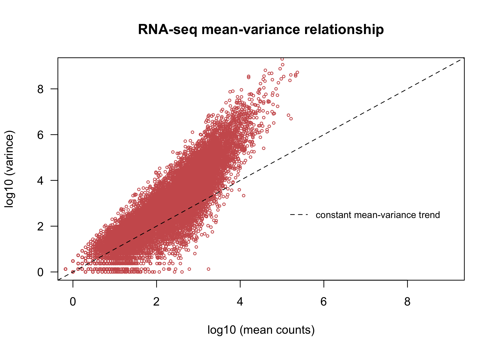
Linear models assume that variance around the mean is constant, therefore RNA-seq data clearly violate this assumption, further demonstrating that standard linear models cannot be used for RNA-seq data.
Instead, we need a statistical model that can leverage distributions other than the normal. Generalized linear models (GLM) are a family of statistical models that can achieve this, and generalize standard linear regression in two ways:
- use of probability distributions other than the normal distribution
- the use of a link-function that links the expression values in the linear model to the experimental groups, in a way that these other distributions can be used.
For analysis of bulk RNA-seq data, we use a GLM of the negative-binomial family in order to appropriately model RNA-seq counts and calculate P-values and test them for differential expression. This approach is adopted by popular Bioconductor-packages for differential expression such as DESeq2 and edgeR.
Further Reading
Video links
(can you tell we really like Stat Quest- the explanations are straight forward and pertain to genomic data specifically)
- Stat Quest video on PCA
- Stat Quest video on clustering algorithms
- Stat Quest video on drawing and interpreting heatmaps
- Stat Quest video on multiple testing (false discovery rate)
- Stat Quest video on linear regression
- Stat Quest video on multiple regression
- Stat Quest video on generalized linear modeling and t-tests
Further Reading
Day 3
Differential Expression Analysis
Differential expression analysis in R
Learning objectives:
- Gain an understanding for the basic characteristics of RNA-seq data, and which distributions we use to model them
- Gain an understanding for the models we apply to RNA-seq data in DESeq2 in order to test for differential expression
- Learn how to perform a differential expression analysis in DESeq2
Set-up
Load required R-packages:
library(DESeq2)
Load the DESeq2 dataset we already generated:
# set working directory (YOU MAY NEED TO CHANGE THIS PATH)
setwd('~/Documents/GitHub/RNA-seq-Differential-Expression-workshop-June-2022/')
# load DESeq dataset
dds <- readRDS("DESeq2.rds")
Introduction
Our exploratory data analysis indicated that Control and Dexamethasone treated samples cluster together respectively, suggesting consistent gene expression profiles between the replicates within conditions. In contrast, Alb and co-treated samples did not cluster by treatment, suggesting less consistency between replicates within conditions.
Based on these observations, a DE analysis of Control vs Dex is likely to have the most statistical power, therefore we will focus on this comparison in the following analysis. The image below highlights the main steps that will be involved in the DE analysis, and the functions that perform these steps in DESeq2.
Part 1: Perform the Differential Expression analysis
DESeq2 provides the function DEseq(), which acts as a wrapper for several other functions that perform specific steps of the DE analysis.
The main functions wrapped into DESeq2 are:
- Estimation of size factors (estimateSizeFactors())
- Estimation of dispersion (estimateDispersions)
- Fitting of the generalized linear model (GLM) and testing of wald statistics (nbinomWaldTest)
These functions can be run independently, however the DESeq() function provides a convenient way to perform the differential analysis in one step.
Run DESeq2 on our dataset:
# run the DEseq2 analysis
dds <- DESeq(dds)
Clearly, a lot is done for you by DESeq(). In order to understand what this function is doing under the hood and why, we need to understand the basic characteristics of RNA-seq data.
Part 2: Characteristics of RNA-seq data
Just like any other data type, it is important to understand the basic distribution before performing any analysis, so that we can select an appropriate statistical model for the data. DESeq2 fits models to the raw count data, therefore we should check the distribution of these counts.
Plot a histogram of raw counts:
hist(counts(dds, normalized=FALSE)[,5],
breaks = 500, col="blue",
xlab="Raw expression counts",
ylab="Number of genes",
main = "Count distribution for sample X")
As is obvious from the histogram, most genes have very low count values, with relatively few demonstrating higher expression levels. This plot highlights the extremely large dynamic range of RNA-seq data.
Importantly, the data is obviously not normally distributed, therefore any statistical model based on the normal distribution (e.g. t-test) is not appropriate for DE testing. By looking again at the matrix of raw counts, it is clear that RNA-seq is integer count data, therefore we should use a statistical model for count-based data.
Look at the head of the raw counts data again:
head(counts(dds, normalized=FALSE))
One commonly used distribution for count data is Poisson
distribution, a discrete distribution which measures the probability of a given number of events happening in a specific interval. For example, what is the probability of observing 124 reads for gene X in an RNA-seq dataset.
Importantly, the Poisson distribution assumes mean == variance. mean and variance in the context of biological count data are defined as follows:
- mean - the average count of a gene across replicates
- variance - the average deviation from the mean across replicates
To see if our RNA-seq data meets this assumption (and we should apply a poisson distribution), we can plot the mean vs the variance for a set of replicates in our dataset:
# calculate mean and variance for group of replicates
mean_counts <- apply(counts(dds, normalized=FALSE)[,1:3], 1, mean)
variance_counts <- apply(counts(dds, normalized=FALSE)[,1:3], 1, var)
# plot the mean variance trend
plot(log10(mean_counts), log10(variance_counts),
ylim=c(0,9), xlim=c(0,9),
ylab = "log10 (mean counts)", xlab = "log10 (variance)",
main = "Mean-variance trend", las = 1)
# add line for x=y
abline(0,1,lwd=2,col="red")
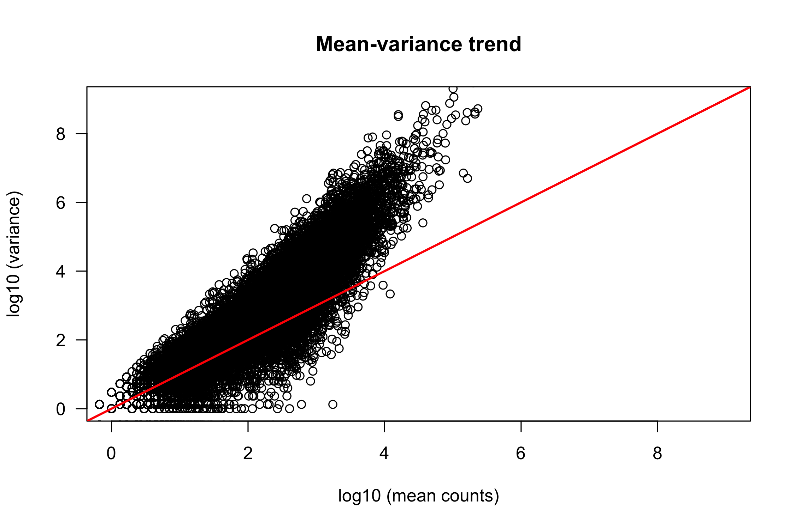
If mean == variance for all genes, we would expect to see the points distributed across the red x=y line, however this is obviously not the case. At high read counts, the variance tends to be > than the mean, a feature referred to in statistics as overdispersion.
Additionally, we see there is more difference between the variances of genes with low counts than at high counts. Therefore, the variance is dependent upon the mean, a quality referred to as heteroscadicity.
Part 3: Modeling RNA-seq data
RNA-seq data clearly violate the key assumption of the poisson distribution mean == variance, therefore we use an alternate distribution that accounts for overdispersion. One solution is to use a generalization of the Poisson distribution called the negative-binomial (NB) distribution which includes a dispersion parameter that describes the amount the variance exceeds the mean for genes of a particular expression level.
We can plot a few randomly generated NB distributions with different dispersions to examine how the dispersion parameter affects the spread of the data.
# set the plotting window to 3 rows and 1 column
par(mfrow=c(3,1))
### dispersion = 0.001
hist(rnbinom(n = 10000, mu = 100, size = 1/0.001),
xlim = c(0, 300), xlab = "", breaks = 500,
main = " Dispersion 0.001")
### dispersion = 0.01
hist(rnbinom(n = 10000, mu = 100, size = 1/0.01),
xlim = c(0, 300), xlab = "", breaks = 500,
main = " Dispersion 0.01")
### dispersion = 0.1
hist(rnbinom(n = 10000, mu = 100, size = 1/0.1),
xlim = c(0, 300), xlab = "", breaks = 500,
main = " Dispersion 0.1")
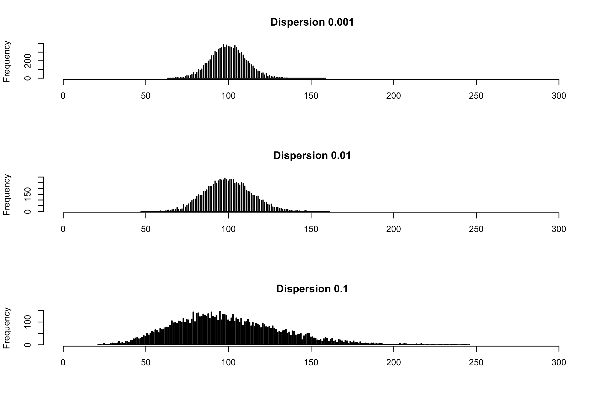
This example for plotting NB distributions was adapted from the Data Analysis for the Life Sciences series available on edX and at
rafalab, and is an excellent resource to learn more about how we model RNA-seq data for differential expression analysis.
Clearly, as the dispersion parameter increases, variation around the mean also increases. To model RNA-seq data using the negative binomial distribution, we must therefore estimate a dispersion parameter for each gene in the dataset.
The mean, variance, and dispersion are linked by the equation:
variance = mean + dispersion x 2 mean-squared ( var = mu + disp. * mu^2)
In order to accurately model differential expression for the genes in our dataset, DESeq2 uses this equation to obtain estimates for the dispersion of each gene within each sample group (e.g. Control and Dex separately).
In particular, DESeq uses the function estimateDispersions() to calculate the dispersion estimates, however this function is called by the wrapper function DESeq() therefore we generally do not need to use it directly.
NOTE: If we use the Poisson distribution instead of the negative binomial, we will fail to correctly estimate the per gene variability, leading to an increase in false positives in our DE analysis.
Shrinkage of dispersion estimates
One issue with the approach described above is that when the number of replicates is small (e.g. 3-5 in a typical RNA-seq experiment) the raw estimates of dispersion will be inaccurate. If we use these low accuracy raw dispersion estimates for differential expression testing, we will generate false positive results.
To improve the raw gene-level estimates of dispersion, DESeq2 uses a statistical procedure called empirical bayes to ‘shrink’ these initial dispersion estimates toward a ‘prior’ mean, which is calculated by fitting a curve to the initial dispersion estimates based on their associated means, as seen in the figure below (from the DESeq2 paper):
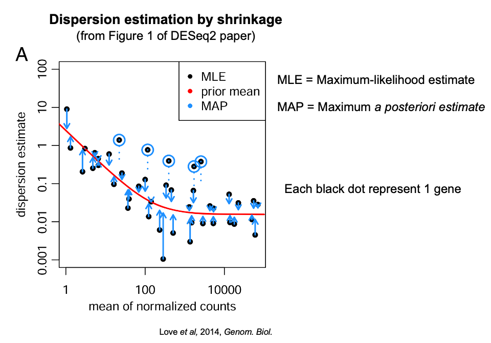
Two major factors control the magnitude of the shrinkage for each dispersion estimate:
1. the number of samples in the group under consideration (more replicates -> less shrinkage)
2. how far the initial dispersion is from the prior mean
In the above dispersion plot, raw dispersion estimates are shrunk towards the prior mean (fitted curve in red) to a final MAP estimate. For dispersion estimates further away from the line, you can see that their estimates are shrunk more than those are are originally closer to the line. This procedure generates more accurate estimates of dispersion as it shares information across genes with similar expression levels.
Review dispersion estimates for your dataset
Based on the equation shown above that connects the mean, variance and dispersion, we expect the dispersion to decrease when the mean increases. If we do not see this trend in the dispersion estimates for our dataset, the negative binomial may be a poor fit for the data, and we may need to use another method to test DE.
Before performing a DE analysis, it is therefore important to check the relationship between the dispersion and the mean. This can be done using a dispersion plot which DESeq2 allows you to generate using the convenient function plotDispEsts().
Plot the dispersion estimates for our dataset:
# set the plotting window to 1 rows and 1 column
par(mfrow=c(1,1))
plotDispEsts(dds)
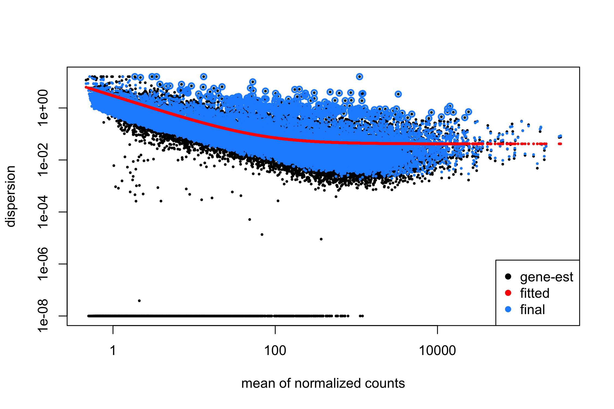
Two features of the dispersion plot tell us that this is a well calibrated set of dispersion estimates:
to two features:
- the final estimates are well scattered around the fitted line
- the dispersion trend decreases with increasing mean expression.
If the dispersion plot showed more structure, we would be concerned that the model is not estimating dispersions well for our data, indicating something may be wrong with the dataset, e.g. outlier samples, a batch effect, low quality samples/data, potential contamination etc.
Take home message on dispersion estimates:
Confirm your dispersion estimates are well calibrated before performing your DE analysis, as accurate estimation of dispersion is critical in controlling the false-positive rate in experiments with smaller sample sizes (i.e. most RNA-seq experiments)**.
Part 4: Hypothesis testing
Now that we know which distribution we will assume for our data, we are ready to begin fitting models and testing for differential expression.
In a previous lesson, we introduced generalized linear models (GLM), a family of statistical models that generalize standard linear regression in two ways:
- use of probability distributions other than the normal distribution
- use of a link-function that connects the expression values in the linear model to the experimental groups
Since we are assuming our raw counts follow a negative-binomial (NB) distribution, the GLM we will fit is of the NB family of GLMs.
The DESeq2 model:
The formula shown below defines the GLM used for differential expression analysis in DESeq2, and is described in detail in the original DESeq publication.
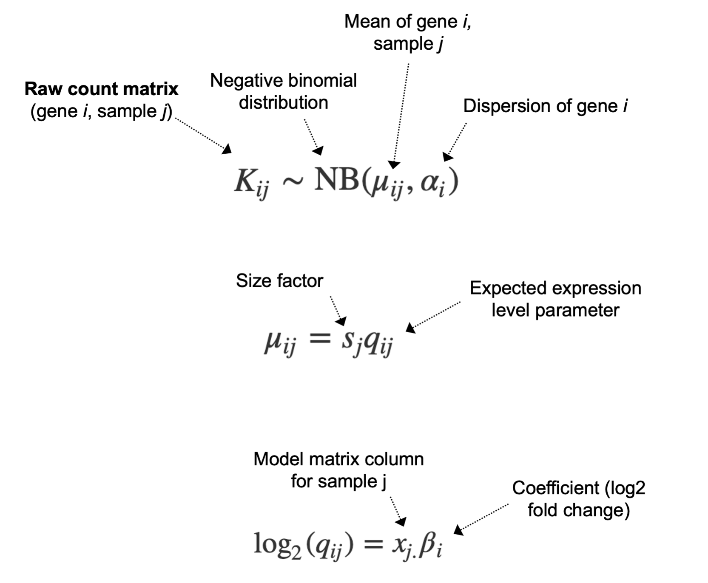
Briefly, the main features of this model:
- the raw counts are modeled using a NB distribution with a fitted mean ,μ, and a gene-specific dispersion parameter, α
-
The mean μ is derived from the expected expression level across samples, q, and the sample-specific scale factor, s, (to correct for library size & composition)
-
Expected expression level across samples, q, is used to estimate the log2 fold change (β) for each experimental group in design matrix, x
By fitting the model using the raw counts, dispersion estimates, and size factors for each gene, we obtain a set of model coefficients for each sample group, which can be interpreted as the log2 fold-change in expression for that gene between the baseline group and each comparison group.
This coefficient, and the confidence associated with it (the standard error) can be used in hypothesis testing to calculate a P-value. DESeq2 uses the Wald-test to perform hypothesis testing, with the null hypothesis that the log2 fold-change between experimental groups for an individual gene is not significantly different from 0 (no change in expression). This process is depicted in the figure below.
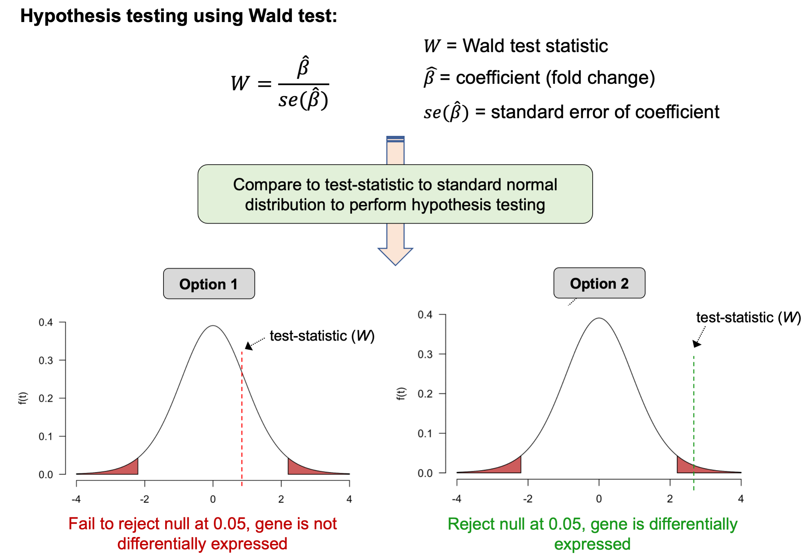
Summary of major steps:
1. The coefficient (log 2 fold-change) is divided by the standard
error
2. Compare test-statistic to standard normal distribution to compute a P-value
3. Based on P-value, accept or reject the null
This procedure is performed for every gene in the dataset, so if we test 20,000 genes for differential expression, we will end up with 20,000 sets of coefficients and P-values.
In DESeq2, this testing procedure is implemented by nbinomWaldTest() which is called by the wrapper function DESeq() therefore we do not usually need to call it directly.
Note:
DESeq2can also implement a likelihood ratio test (LRT), which is used to compare expression across more than two groups. For example, if you collected samples over a range of time points and you wanted to test if gene expression changed significantly over these time points, you could use the LRT instead of the wald-test.
Extracting and processing the results
DESeq2 already performed all of the steps for hypothesis testing using the wald-test for us when we ran the DESeq2() function. All we have to do is tell DESeq2 which results we want to look at, which can be done
using the results() function, and specifying the coefficients that we
want by using the names agument.
# quickly check the available coefficients we could extract
resultsNames(dds)
# get results for DEG analysis (and order by Pval) by specifying design
res <- results(dds,
name = "tx.group_Dex_vs_untreated",
alpha = 0.05)
# check dminesions on tables
dim(res)
# print top of results table
head(res)
| baseMean | log2FoldChange | lfcSE | stat | pvalue | padj | |
|---|---|---|---|---|---|---|
| ENSG00000000003 | 816.7294 | -0.3774491 | 0.235263 | -1.604372 | 0.1086321 | 0.307043 |
| ENSG00000000419 | 542.5456 | 0.1941677 | 0.109805 | 1.768291 | 0.0770123 | 0.250298 |
| ENSG00000000457 | 242.0987 | 0.036744 | 0.106903 | 0.343714 | 0.7310615 | 0.876968 |
| ENSG00000000460 | 64.6222 | -0.0887878 | 0.27153 | -0.32699 | 0.7436752 | 0.883366 |
| ENSG00000000971 | 5961.1192 | 0.4356027 | 0.28725 | 1.51646 | 0.1294031 | 0.340899 |
| ENSG00000001036 | 1319.2329 | -0.2397616 | 0.1488 | -1.611296 | 0.1071152 | 0.304209 |
Column summary:
baseMean: mean normalized count value over all sampleslog2FoldChange: log2 fold change estimate of expression between conditionslfcSE: standard error of the estimated log2 fold changestat: test-statisticpvalue: raw (unadjusted) P-valuepadj: Benjamini and Hochberg adjusted P-value
The results table is composed of 24,419 rows, 1 for each gene tested in our dataset, each with its own unique Ensembl gene identifier in the first column. The subsequent columns provide relevant details related to the hypothesis testing process, including the log2 fold change and P-value(s).
Currently, the results are ordered by the Ensembl gene identifier, however it would be more useful to have them ordered by statistical significance.
# order by adj Pval
res_ord <- res[order(res$padj),]
# print top of results table
head(res_ord)
| baseMean | log2FoldChange | lfcSE | stat | pvalue | padj | |
|---|---|---|---|---|---|---|
| ENSG00000179094 | 879.1624 | 3.195512 | 0.52009 | 6.14416 | 8.04E-10 | 1.20E-05 |
| ENSG00000109906 | 427.5196 | 7.102329 | 1.263873 | 5.6195 | 1.92E-08 | 1.43E-04 |
| ENSG00000157613 | 2837.4644 | -0.977869 | 0.188368 | -5.19128 | 2.09E-07 | 6.45E-04 |
| ENSG00000179593 | 74.1106 | 9.607462 | 1.852989 | 5.18485 | 2.16E-07 | 6.45E-04 |
| ENSG00000182010 | 104.2058 | -1.897678 | 0.361016 | -5.25649 | 1.47E-07 | 6.45E-04 |
| ENSG00000134253 | 139.3307 | -1.965796 | 0.382335 | -5.14155 | 2.72E-07 | 6.77E-04 |
Now we can review the genes that are of most interest to us, that is, those with small adjusted p-values (most significant). Note the we sorted on the adjusted P-values column padj, NOT the raw P-values column pvalue. As discussed previously, we are conducting thousands of tests, and must correct for the multiple testing problem.
padj provides us with Benjamini and Hochberg adjusted P-values that are corrected for multiple testing. If we were to use the pvalue column to select differentially expressed genes, we would make many false-positive findings (type I errors).
We could also use the results table to get more detail on our results, for example, determine how many genes fall under particular significance thresholds.
# quick check for how many DEGs with significance @ 5% level in either FC direction
sum(res$padj < 0.05, na.rm=TRUE)
sum(res$padj < 0.05 & res$log2FoldChange > 2, na.rm=TRUE)
sum(res$padj < 0.05 & res$log2FoldChange < -2, na.rm=TRUE)
Other methods to control for multiple hypothesis testing can be applied using the pAdjustMethod argument in the results() function, such as the more conservative Bonferonni method.
res <- results(dds,
name = "tx.group_Dex_vs_untreated",
alpha = 0.05,
pAdjustMethod = "bonferroni")
# how many significant DEGs
sum(res$padj < 0.05, na.rm=TRUE)
As expected, the more conservative method leads to fewer statistically significant results at the same P-value threshold.
Remember, P-value thresholds do not need to be set at 5% for every experiment, you can be more or less conservative depending on the nature of your experiment.
Part 5: Independent filtering
You may have noticed above that the argument na.rm=TRUE was used in the sum() function calls above. This is required because the vector or adjusted P-values contains NA values.
Count how many NA values are present in the vector of adjusted P-values:
table(is.na(res$padj))
These NA's are generated as part of a process referred to in DESeq2 as independent filtering, which aims to select genes that have little or no chance of being expressed (mostly low expression genes), and exclude them from final testing for differential expression.
This is valuable as it means fewer genes are tested for DE, and we therefore need to correct for fewer multiple tests, improving our statistical power.
For example, consider the Bonferonni thresholds below, involving correction for different numbers of genes. Which has more statistical power to accept true positive?
#threshold 1
0.05/10000
# threshold 2
0.05/20000
How does Independent filtering work?
DESeq2 uses an iterative process to find the expression level at which the maximum number of null hypothesis rejections occurs. DESeq2 then selects the expression quantile 1 standard deviation below this maximum, and filters any genes with mean counts below this threshold, reducing the number of tests that need to be corrected for.
Independent filtering can be visualized by plotting the number of rejections of the null hypothesis against mean counts, to help us understand at which mean count value DESeq2 chose to filter results.
# look at independent filtering results table
metadata(res_ord)$filterNumRej
# plot number of rejections at specific quantiles
plot(metadata(res_ord)$filterNumRej,
type="b", ylab="number of null hypoth. rejections",
xlab="quantiles of filter (mean norm. counts)")
# add line connecting points together
lines(metadata(res_ord)$lo.fit, col="red")
# add vertical line at selected independent filtering threshold
abline(v=metadata(res_ord)$filterTheta)
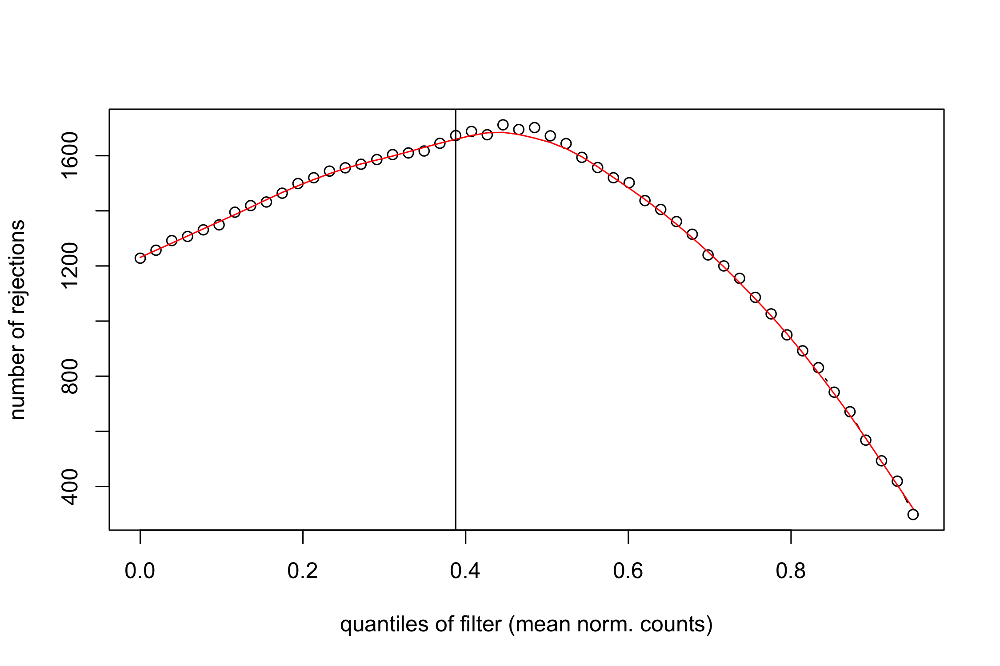
Any gene with a mean expression value below the red line (the mean count value 1 standard deviation below where the maximum number of rejections was obtained) will have their padj values set to NA, and discarded during multiple testing correction.
Its worth removing the genes assigned a padj value of NA due to independent filtering in order to make our lives easier processing the results downstream.
res_ord <- res_ord[!is.na(res_ord$padj),]
Write the results to a .csv file (could alternatively be a text file) and save our DESeq2 object.
write.csv(as.data.frame(res_ord), file = "DE_results.csv")
# save RDS object
saveRDS(dds, file = "DESeq2.rds")
Annotation & Visualization
Results annotation & visualization
Learning objectives:
- Learn how to add annotations to differential expression results
- Create graphics to better understand the dynamics of differential expression in the comparison of interest
Set-up
library(vsn)
library(dplyr)
library(pheatmap)
library(gplots)
library(RColorBrewer)
library(ComplexHeatmap)
library(readr)
library(circlize)
library(EnhancedVolcano)
library(apeglm)
library(ggrepel)
Part 1: Gene annotation
To make our results interpretable, we need to add annotation data for each gene, e.g. symbol, genome coordinates, etc. Since we used Ensembl v97 to annotate these data, we need to use the Ensembl v97 annotation data to annotate these results.
We can download the annotation file for our species of interest in a flat file format using the BioMart on the Ensembl website.
Download the file yourself and add it to the data/ directory, or use the one we have provided for you.
# read in the annotation file
anno <- read.delim("data/GRCh38.p12_ensembl-97.txt", stringsAsFactors = T, header = T)
# have a look at the first few rows
head(anno)
# order by Chromosome
anno <- anno[order(anno$Chromosome.scaffold.name),]
# have a look at the first few rows
head(anno)
Lets have a look at the distribution of features on each Chromosome:
# generate a table counting number of each level of chromosome
tab1 <- table(anno$Chromosome.scaffold.name)
tab1[1:22]
Lets also quickly check that nothing is duplicated in the ENSG ID column of our annotation, as this would cause problems when merging with our results.
any(duplicated(anno$Gene.stable.ID))
Now add the annotation for each gene name directly to the results.
# use match() to find corresponding indices (rows) for each ENSG ID
mat1 <- match(rownames(res_ord), anno$Gene.stable.ID)
# check if any NAs exist
table(is.na(mat1))
# add gene names to results as a new column
res_ord$gene <- as.character(anno$Gene.name[mat1])
# look at the top 20 rows
head(res_ord, 20)
Add some additional columns that might be of interest to us when reviewing the results:
res_ord$chr <- as.character(anno$Chromosome.scaffold.name[mat1])
res_ord$start <- as.character(anno$Gene.start..bp.[mat1])
res_ord$end <- as.character(anno$Gene.end..bp.[mat1])
res_ord$strand <- as.character(anno$Strand[mat1])
# look at first few rows
head(res_ord)
We've now added a lot of useful information to our results that will help us interpret them in more detail. We may also wish to restrict the table to only those results that were statistically significant (at a threshold of 5%).
# subset @ 5% adjusted pval sig. level
res_order_FDR_05 <- res_ord[res_ord$padj<0.05,]
nrow(res_order_FDR_05)
Now write the table to a .csv file so that you can view it in other software (e.g. Excel) or share with others.
# write csv file for complete results
write.csv(as.data.frame(res_ord), file= "DE_results.csv")
# write csv for significant results
write.csv(as.data.frame(res_order_FDR_05), file="DE_results.FDR.0.05.csv")
Part 2: Visualization of Differential Expression
Several specific plot types exist that are useful for visualizing the results of a differential expression analysis, each providing insight on complimentary aspects of the results.
Below we will explore the major plot types useful for visualization of RNA-seq differential expression results, including:
- Volcano plots
- MA plots
- Heatmaps (hierachical clustering)
Volcano plot
Volcano plots contrast the log2 fold change (effect size) against the -log10 P-value (statistical significance). The -log10() of a really small number is a very large value, therefore any gene that has a very small P-value will appear higher up along the y-axis. In contrast, the -log10 of 1 is equal to 0, therefore genes with low statistical significance (P-values approaching 1) will appear lower down on the y-axis.
Similarly, genes with larger fold changes will appear further along the x-axis, in both directions. Genes with a positive fold change represent genes whose expression was greater in the baseline group (e.g. wild-type), while genes with a negative fold change represent genes whose expression was lower than in the baseline group.
Note: The fold-change value of genes with non-significant fold changes is not meaningful, as there is not enough statistical confidence in these fold changes.
plot(res$log2FoldChange, -log10(res$pvalue),
main = "Volcano plot",
las = 1, col = "indianred",
ylab = "- log10 P-value", xlab = "log2 Fold change")
# add horizontal lines to help guide interpretation
abline(h=-log10(0.05/nrow(res)), lty = 1, col = "black") # Bonferonni
abline(h=-log10(0.05), lty = 2, col = "black") # nominal P-value
text(7.5, -log10(0.05/nrow(res))+0.5, "Bonferonni")
text(7.5, -log10(0.05)+0.5, "P-value < 0.05")
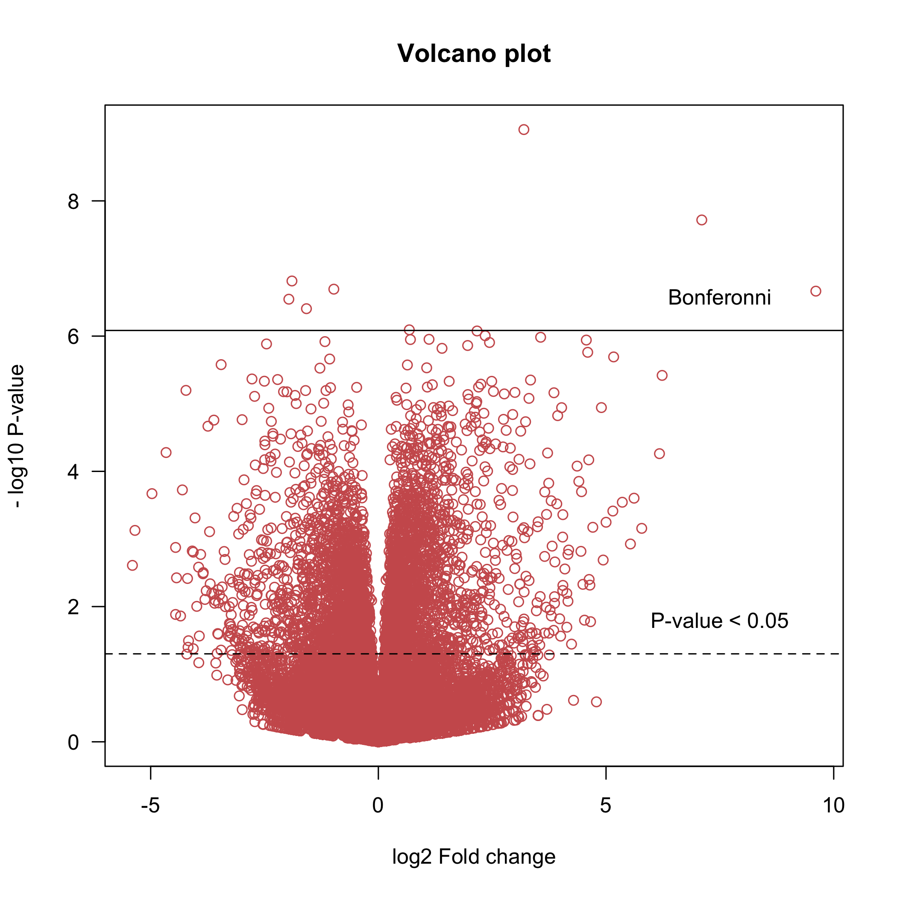
Some genes are above the significance threshold in both the up- and down-regulation directions, but also have absolute log2 fold change values of at least 2 or more. Of particular interest, there seem to be a few genes with very large fold change values & -log10 P-values, making them especially interesting as their effect size is large AND our confidence in this fold change is good.
It is a hard to make specific inferences from this plot at the individual gene level, so some labels for interesting data points (and some colors) would definitely improve this volcano plot, and make it more informative. We will use the ggpolot2 R package to do this, and we will color each point based on a combination of fold change and P-value, as these determine which genes are of most interest to us.
# save a dataframe from the results() output
res_tmp <- as.data.frame(res_ord)
# add a column that will be used to save the colors we want to plot
res_tmp$cols <- c()
# set the significance cut off (alpha) and fold change threshold to be used for coloring of genes
alpha <- 0.05/nrow(res)
fc_cutoff <- 2
# loop through our dataframe and add values to the color column based on magnitude of alpha and LFCs
res_tmp$cols <- NA
for(i in 1:nrow(res_tmp)){
# if pvalue is NA don't assign a color - no plotting
if(is.na(res_tmp$pvalue[i])){
res_tmp$cols[i] <- NA
}
# if pvalue is < alpha AND LFC is > FC cutoff color red
else if(res_tmp$pvalue[i]<=alpha & res_tmp$log2FoldChange[i] > fc_cutoff){
res_tmp$cols[i] <- "indianred"
}
# if pvalue is < alpha AND LFC is < -FC cutoff color red
else if(res_tmp$pvalue[i]<=alpha & res_tmp$log2FoldChange[i] < -fc_cutoff){
res_tmp$cols[i] <- "indianred"
}
# if pvalue is < alpha AND LFC is not within cut off value color blue
else if(res_tmp$pvalue[i]<=alpha & res_tmp$log2FoldChange[i]>-fc_cutoff & res_tmp$log2FoldChange[i]<fc_cutoff){
res_tmp$cols[i] <- "cornflowerblue"
}
# if pvalue is > alpha AND LFC is > cut off value color gray
else if(res_tmp$pvalue[i]>alpha & res_tmp$log2FoldChange[i] > fc_cutoff){
res_tmp$cols[i] <- "gray47"
}
# if pvalue is > alpha and LFC is < -cut off value color gray
else if(res_tmp$pvalue[i]>alpha & res_tmp$log2FoldChange[i] < -fc_cutoff){
res_tmp$cols[i] <- "gray47"
}
# if pvalue is > alpha and LFC is not within cutoff values color light gray
else if(res_tmp$pvalue[i]>alpha & res_tmp$log2FoldChange[i] < fc_cutoff){
res_tmp$cols[i] <- "gray10"
}
}
res_tmp$ENSG <- rownames(res_tmp)
# generate the plot
p = ggplot(res_tmp, aes(log2FoldChange, -log10(pvalue))) +
geom_point(aes(col=col), alpha = 0.5, size =2.5, colour = res_tmp$cols, fill = res_tmp$cols) +
xlab("Log2 fold change") + ylab("-log10 Q-value") +
ylim(0, 9) +
xlim(-5, 11) +
geom_hline(yintercept = -log10(alpha), color = "black", linetype = "dashed", size = 0.4) +
theme(legend.key = element_blank()) +
ggtitle("Control vs Dex")
# add vertical fold change lines
geom_vline(xintercept = fc_cutoff, colour = "black", linetype="dotted") +
geom_vline(xintercept = -fc_cutoff, colour = "black", linetype="dotted")
# print the plot
print(p)
This is nice, but some labels for potentially interesting genes would be useful. Lets add some using the ggrepel package.
p2 <- p +
# add labels to genes w/ LFC > 2 and above alpha threshold
geom_label_repel(data = subset(res_tmp, log2FoldChange > 2 & pvalue < alpha), aes(label = gene),
box.padding = 0.35,
nudge_x = 0.1,
nudge_y = 0.1,
point.padding = 1,
label.size = 0.1,
segment.size = 0.3,
segment.color = 'grey50', size = 3) +
# add labels to genes w/ LFC < -2 and above alpha threshold
geom_label_repel(data = subset(res_tmp, log2FoldChange < -2 & pvalue < alpha), aes(label = gene),
box.padding = 0.35,
nudge_x = -0.1,
nudge_y = 0.1,
point.padding = 1,
label.size = 0.1,
segment.size = 0.3,
segment.color = 'grey50', size = 3)
# print the plot
print(p2)
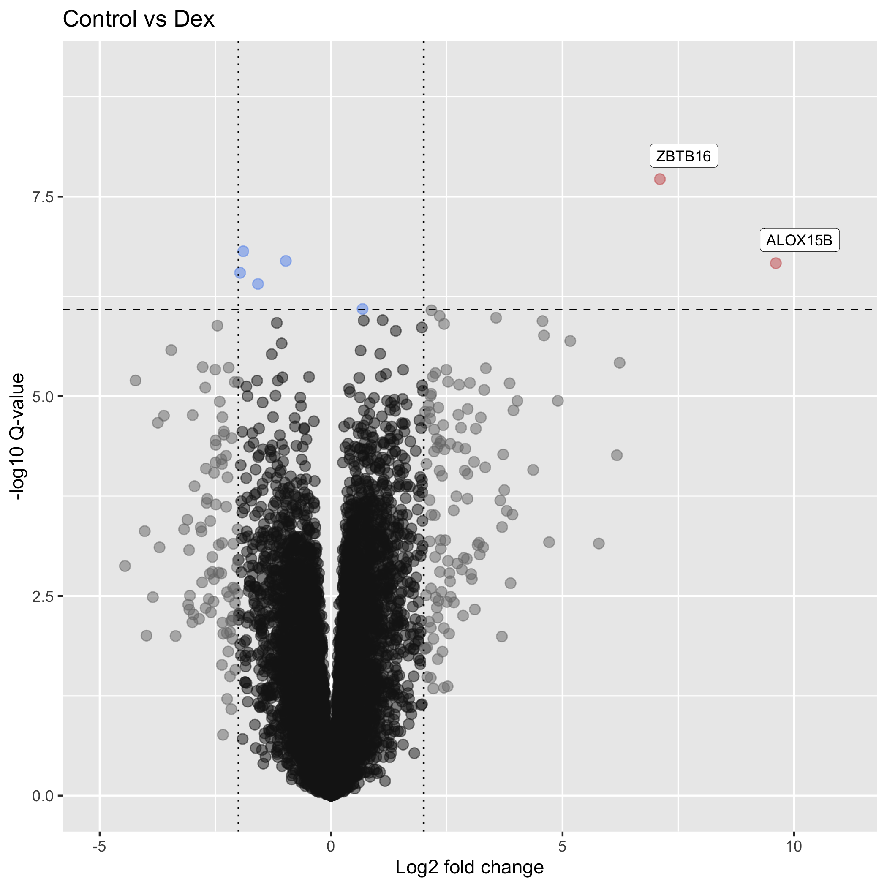
This looks a lot better, and is more informative than the first basic plot we generated.
Replicates - Food for thought:
Detecting truly differentially expressed genes is dependent on the technical variance between your replicates. If the technical variance is high, you generally need a large fold-change to achieve statistical significance. The more replicates you have, the more you are able to reduce the technical variance, increasing statistical power, and enabling you to confidently detect differential expression of smaller fold changes. For example, for an experiment where there are 300 truly differentially expressed genes between your conditions, you may detect 200 of these with 3 replicates, while you may detect 250 with 5 replicates.
MA plots
The MA-plot contrasts gene expression levels against log2 fold change values, allowing us to identify high, low, or medium genes expression genes that were differential across the experimental conditions.
In a typical experiment, we expect to see DEGs across most of the range of expression values, therefore the MA plot is also a useful quality control instrument. To highlight genes that were significantly DE, any gene with an adjusted P-value of < 0.05 (or whatever threshold is set) is colored in blue.
The DESeq2 package has a useful function plotMA that will generate this plot for you from a DESeq class object.
plotMA(res_ord, ylim=c(-6,6), main = "Raw Log2 Fold change")
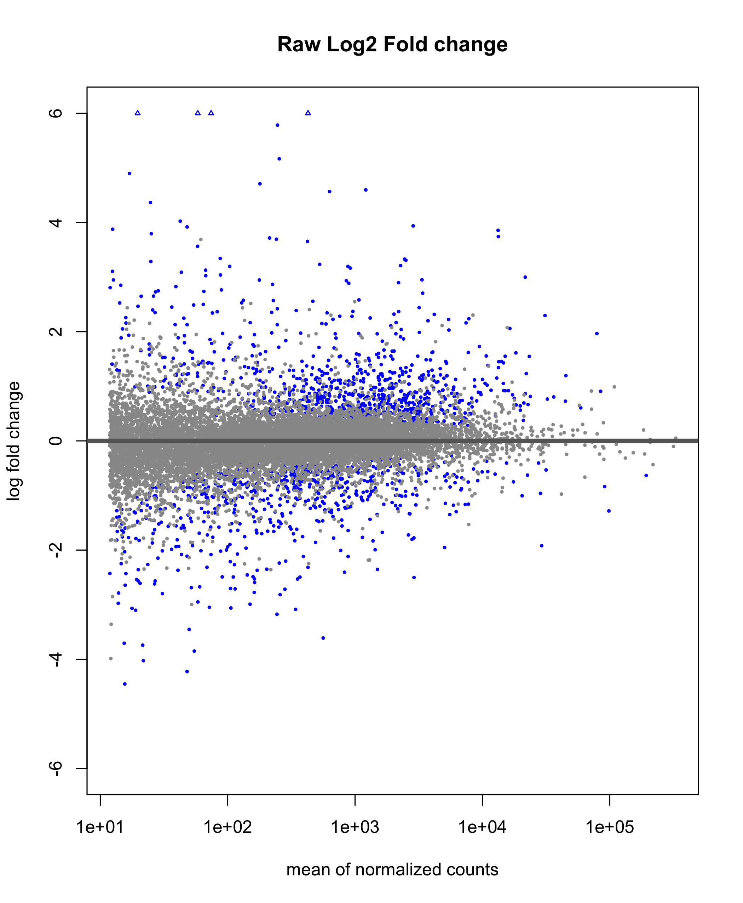
Statistically significant DE genes are detected across the full range of expression values (x-axis), which is a good indicator that our differential expression model has was appropriate and worked well.
Furthermore, a handful of genes with medium to high expression values can be seen that ALSO have large LFC values. These genes potentially represent the most interesting findings, because they had the largest difference between the experimental conditions.
If we wanted to identify these genes in our results table at specific thresholds, we could apply an approach like the example provided below:
# subset for significant results, w/ absolute LFC > 2, exp. mean > 1e3
res_ord_sub <- res_ord[res_ord$padj < 0.05 &
abs(res_ord$log2FoldChange) > 2 &
res_ord$baseMean > 1e3, ]
Empirical Bayes shrinkage of log2 FCs
The log2 fold-change plotted above is the raw LFC value estimated by the generalized linear model. However, as we discussed above, the individual estimates of variance or dispersion for a single gene are often unreliable, and this holds true log2 foldchange also.
To obtain more confident LFC estimates, DESeq2 performs a statistical procedure that involves shrinking the raw fold change estimates toward zero for genes that are less likely to contain reliable or highly important information.
This is done in a very similar way to the shrinkage using empirical bayes that we discussed for the dispersion estimates, and penalizes (shrinks more) LFC based on 2 major factors:
- low count values
- high dispersion (& thus reduced confidence in expression levels)
DESeq2 provides a function lfcShrink() that must be implemented separately of the standard workflow implemented using DESeq2().
# calculate shrunken fold change estimate
res_shrink <- lfcShrink(dds,
coef=paste0(resultsNames(dds)[which(resultsNames(dds)=="tx.group_Dex_vs_untreated")]),
type="apeglm")
After performing the shrinkage procedure, we compare the raw and shrunken LFCs to assess the impact of shrinkage:
# set the plotting window to 2 rows and 1 column
par(mfrow=c(2,1))
# plot the raw FC estimates
plotMA(res_ord, ylim=c(-6,6), main = "Raw Log2 Fold change")
# plot the shrunken estimates
plotMA(res_shrink, ylim=c(-6,6), main = "Shrunken Log2 Fold change")
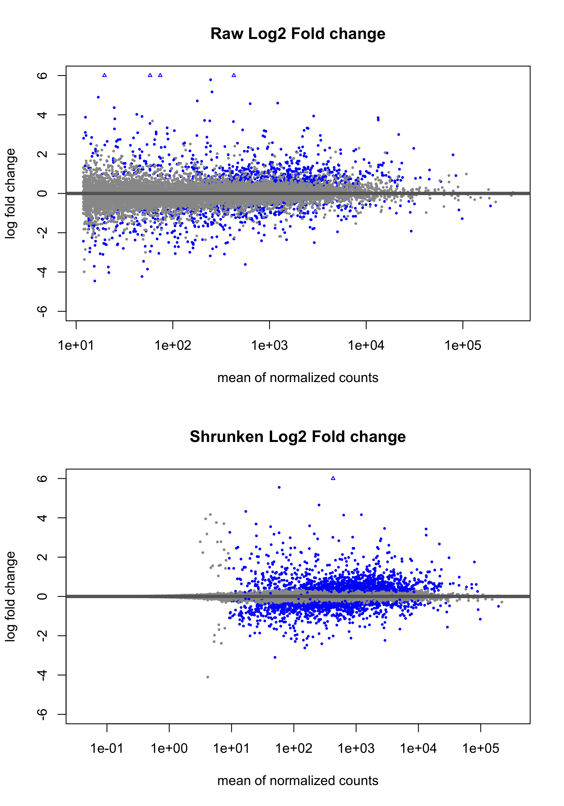
Comparing to the raw LFCs, majority of genes with lower expression values have had their LFCs shrunk toward zero. Conceptually, genes with low counts can easily generate a large LFC since only a few extra counts represent a substantial proportional difference between two small numbers. Consequently, these fold-changes are unlikely to be accurate as they are based off few reads, so we don’t want to prioritize their importance by giving them a large LFC, and instead shrink them toward 0.
It’s always good to review the shrunken estimates, to confirm that you don’t have many DEGs with very small count values. If you do, you may want to look at the expression levels for those genes to investigate these findings in more detail.
Alternatively, as expression levels increase, it is evident from the MA plot that the level of shrinkage is generally less, and more genes are identified as significant. The higher expression level of these genes means more data is available to calculate the LFC, so we can be more confident about these results.
Note: This shrinkage does not substantially affect hypothesis testing, therefore is performed independently. The shrunk log fold change values are more valuable for prioritizing your results further, visual inspection, or functional analysis (e.g. gene ontology/pathway analysis).
Heatmaps - (Hierarchical clustering)
As we discussed in the exploratory analysis lesson, heatmaps are a useful way to visualize the results of clustering analyses, such as unsupervised hierarchical clustering.
Genes that are significantly differentially expressed between experimental conditions are by definition informative features about the differences between those groups. It is therefore common to perform clustering analysis using only the genes identified as differentially expressed, and visualize these results using a heatmap.
Similarly to as we did in the exploratory analysis lesson, we use the matrix of rlog transformed values, and limit this to only those genes present in the significant results table res_order_FDR_05. We then subject these data to unsupervised hierarchical clustering and visualize on a heatmap.
# take the regularized log
rld <- rlog(dds, blind = FALSE)
#isolate samples from groups of interest
ind_to_keep <- c(which(colData(rld)$group=="untreated"), which(colData(rld)$group=="Dex"))
# set up gene expression matrix
mat1 <- assay(rld)[rownames(res_order_FDR_05), ind_to_keep]
# scale matrix by each col. values
mat_scaled = t(apply(mat1, 1, scale))
# set up colors for heatmap
col = colorRamp2(c(-3, 0, 3), c("blue", "white", "red"))
cols1 <- brewer.pal(11, "Paired")
# subset coldata for samples in untx and ex groups
colData_sub <- colData(dds)[ind_to_keep, ]
# set up annotation bar for samples
ha1 = HeatmapAnnotation(Group = colData_sub$group,
col = list(Group = c("untreated" = cols1[1], "Dex" = cols1[2])),
show_legend = TRUE)
# se up column annotation labels (samples)
ha = columnAnnotation(x = anno_text(colData_sub$SRR,
which="column", rot = 45,
gp = gpar(fontsize = 10)))
# generate heatmap object
ht1 = Heatmap(mat_scaled, name = "Expression", col = col,
top_annotation = c(ha1),
bottom_annotation = c(ha),
show_row_names = FALSE,
show_column_names = FALSE)
# plot the heatmap
draw(ht1, row_title = "Genes", column_title = "Hierachical clustering of DEGs (padj<0.05)")
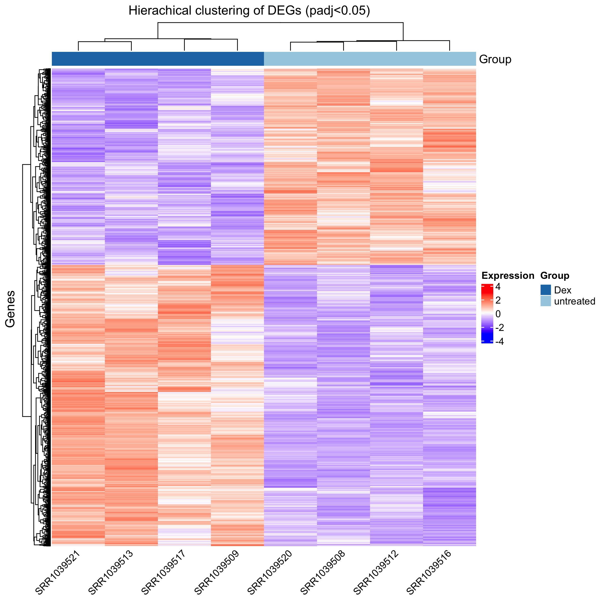
The differentially expressed genes clearly differentiate the untreated samples from the Dex treated samples. Importantly, we can see how many genes are expressed at greater levels in the Dex treated samples than in the untreated, and vice versa.
Putting It Together
Putting it together: the complete workflow
Learning objectives:
- Review the major steps required to perform a complete DE analysis using DESeq2
- Create a baseline for a DESeq2 workflow
A complete workflow
The entire DESeq2 workflow can be run using only few functions run sequentially. In this lesson we will review them to consolidate our knowledge of how to perform a complete DE analysis with DESeq2. We also give an example of a reusable R script that will generate basic exploratory analysis plots, run the DESeq2 functions, and save the results to a file.
The minimum functions needed to run DESeq2
#A minimal example
library(DESeq2)
setwd("~/RNA-seq-Differential-Expression-workshop-June-2022-master/data")
cts <- as.matrix(read.table("all_counts.txt"), sep="\t", header = TRUE, row.names=1, stringsAsFactors = F)
colData <- read.csv("sample_metadata.csv", row.names=1)
colData$tx.group <- factor(colData$tx.group, levels=c("untreated", "Dex", "Alb", "Alb_Dex"))
dds_matrix <- DESeqDataSetFromMatrix(countData = cts, colData = colData, design = ~ tx.group)
dds <- DESeq(dds_matrix)
res <- results(dds, coef=2, alpha = 0.05, lfcThreshold = 0)
res_shrink <- lfcShrink(dds,coef=2, type="apeglm")
res_shrink_ord <- res_shrink[order(res_shrink$padj),]
head(res_shrink_ord)
A more fully-featured DESeq2 workflow
Below is a starting point for a reusable pipeline with more features than the minimal example. The input data, treatments, and contrasts are specified as variables at the top, and used throughout the plotting functions, differential expression functions, and file writing functions.
#Putting it all together
library(DESeq2)
library(pheatmap)
library(ComplexHeatmap)
library(RColorBrewer)
library(circlize)
#Set directory, file names, and contrasts
WORKING_DIRECTORY = "~/RNA-seq-Differential-Expression-workshop-June-2022-master/data"
setwd(WORKING_DIRECTORY)
COUNTS_FILE = "all_counts.txt"
METADATA_FILE = "sample_metadata.csv"
TREATMENTS=c("untreated", "Dex", "Alb", "Alb_Dex")
CONTRAST_NAME = "tx.group"
CONTRAST_BASE = "untreated"
CONTRAST_TEST = "Dex"
#Load Counts and Metadata
cts <- as.matrix(read.table(paste(WORKING_DIRECTORY,COUNTS_FILE, sep="/"), sep="\t", header = TRUE, row.names=1, stringsAsFactors = F))
colData <- read.csv(paste(WORKING_DIRECTORY,METADATA_FILE, sep="/"), row.names=1)
#Build DESeq objects
colData$tx.group <- factor(colData$tx.group, levels=TREATMENTS)
dds_matrix <- DESeqDataSetFromMatrix(countData = cts, colData = colData, design = as.formula(paste(" ", CONTRAST_NAME, sep="~")))
#DESeq function includes estimateSizeFactors(), estimateDispersions(), and nbinomWaldTest(). ?DESeq for more information.
dds <- DESeq(dds_matrix)
# drop genes with low counts
keep <- rowSums(counts(dds)) >= 10
dds <- dds[keep,]
#rlog transformation for visualization
rld <- rlog(dds, blind = FALSE)
var_feature_n <- 500
rv <- rowVars(assay(rld))
select <- order(rv, decreasing = TRUE)[1:var_feature_n]
rld_sub <- assay(rld)[select, ]
rld_sub <- t(rld_sub)
#Calculate PCA
pca <- prcomp(rld_sub)
percentVar <- pca$sdev^2/sum(pca$sdev^2)
percentVar <- percentVar[1:5]
names(percentVar) <- c("PC1", "PC2", "PC3", "PC4", "PC5")
#Plot variance explained by PCs
png("All_samples_PCA_Variance_Explained.png")
barplot(percentVar, col = "indianred", las = 1, ylab = "% Variance", cex.lab = 1.2)
dev.off()
pca_df <- as.data.frame(pca$x)
pca_df$tx.group <- dds@colData$tx.group
pca_df$sample_ids <- colnames(dds)
pca_df$col <- NA
for(i in 1:length(levels(pca_df$tx.group))){
ind1 <- which(pca_df$tx.group == levels(pca_df$tx.group)[i])
pca_df$col[ind1] <- i
}
png("All_sampels_PCA_1_2.png")
plot(pca_df[, 1], pca_df[, 2],
xlab = paste0("PC1 (", (round(percentVar[1], digits=3)*100), "% variance)"),
ylab = paste0("PC2 (", (round(percentVar[2], digits=3)*100), "% variance)"),
main=paste0("PC1 vs PC2 for ", var_feature_n, " most variable genes"),
pch=16, cex=1.35, cex.lab=1.3, cex.axis = 1.15, las=1,
panel.first = grid(),
col=pca_df$col)
text(pca_df[, 1], pca_df[, 2], labels = pca_df$tx.group, cex=0.6, font=2, pos=4)
dev.off()
#Plot Mean-Variance relationship -- Look at this!
png("All_samples_disp_est.png")
plotDispEsts(dds)
dev.off()
# Heirarchical clustering and heatmap plotting for all samples
topVarGenes <- head(order(rowVars(assay(rld)), decreasing=TRUE), var_feature_n)
mat1 <- assay(rld)[topVarGenes,]
col = colorRamp2(c(0, 9, 18), c("blue", "white", "red"))
cols1 <- brewer.pal(11, "Paired")
ha1 = HeatmapAnnotation(Group = colData(dds)$tx.group,
col = list(Group = c("untreated" = cols1[1],
"Dex" = cols1[2],
"Alb" = cols1[5],
"Alb_Dex" = cols1[6])),
show_legend = TRUE)
ha = columnAnnotation(x = anno_text(colData(dds)$SRR,
which="column", rot = 45,
gp = gpar(fontsize = 10)))
ht1 = Heatmap(mat1,
name = "Expression",
col = col,
top_annotation = c(ha1),
bottom_annotation = c(ha),
show_row_names = FALSE,
show_column_names = FALSE)
png("All_samples_heatmap.png")
draw(ht1, row_title = "Genes", column_title = "Top 500 most variable genes")
dev.off()
#heatmap2
ind_to_keep <- c(which(colData(rld)$group==CONTRAST_BASE), which(colData(rld)$group==CONTRAST_TEST))
topVarGenes <- head(order(rowVars(assay(rld)[,ind_to_keep]), decreasing=TRUE), var_feature_n)
mat1 <- assay(rld)[topVarGenes, ind_to_keep]
col = colorRamp2(c(0, 9, 18), c("blue", "white", "red"))
cols1 <- brewer.pal(11, "Paired")
colData_sub <- colData(dds)[ind_to_keep, ]
ha1 = HeatmapAnnotation(Group = colData_sub$tx.group,
col = list(Group = c("untreated" = cols1[1],
"Dex" = cols1[2],
"Alb" = cols1[5],
"Alb_Dex" = cols1[6])),
show_legend = TRUE)
ha = columnAnnotation(x = anno_text(colData_sub$SRR,
which="column", rot = 45,
gp = gpar(fontsize = 10)))
ht1 = Heatmap(mat1, name = "Expression", col = col,
top_annotation = c(ha1),
bottom_annotation = c(ha),
show_row_names = FALSE,
show_column_names = FALSE)
png(paste(CONTRAST_TEST, "vs", CONTRAST_BASE, "heatmap.png", sep="_"))
draw(ht1, row_title = "Genes", column_title = "Top 500 most variable genes")
dev.off()
#Gather significant results
res <- results(dds, contrast = c(CONTRAST_NAME, CONTRAST_BASE, CONTRAST_TEST), alpha = 0.05, lfcThreshold = 0)
#Pre-shrinkage MA Plot
png(paste(CONTRAST_TEST, "vs", CONTRAST_BASE, "preshrink_MA.png", sep="_"))
plotMA(res, ylim=c(-4,4))
dev.off()
#Shrinkage
res_shrink <- lfcShrink(dds,coef=paste(CONTRAST_NAME,CONTRAST_TEST,"vs", CONTRAST_BASE, sep="_"), type="apeglm")
#Post-shrinkage MA Plot
png(paste(CONTRAST_TEST, "vs", CONTRAST_BASE, "shrunk_MA.png", sep="_"))
plotMA(res_shrink, ylim=c(-4,4))
dev.off()
#Order results
res_shrink_ord <- res_shrink[order(res_shrink$padj),]
#Annotate results with gene name
annotation_table <- read.delim("GRCh38.p12_ensembl-97.txt", stringsAsFactors = T, header = T)
annotation_matrix <- match(rownames(res_shrink_ord), annotation_table$Gene.stable.ID)
res_shrink_ord$gene <- as.character(annotation_table$Gene.name[annotation_matrix])
#Write output CSV
write.csv(as.data.frame(res_shrink_ord), file=paste(CONTRAST_TEST, "vs", CONTRAST_BASE, "deseq_results.csv", sep="_"), row.names=T, quote=F )
Despite DESeq2 being able to be run in an automated way, it is important to understand the functions and calculations within. If something doesn't look right, you now have the skills and knowledge to be able to pull apart the counts matrix, dds, and results objects. Additionally, plots of heatmaps based on counts, subsetted by variance, or subsetted by the top differentially expressed genes can be useful. The above lines of code should be used as a starting point for a fully explored and annotated differential expression analysis.
Further Reading
Video links
Further reading
Closing Remarks
Closing remarks
Workshop goals:
- Understand the basic principles of a differential expression (DE) analysis using RNA-seq data
- Develop a working understanding of the fundamental statistics fro typical DE analysis methods
- Perform a DE analysis using R/Bioconductor packages
- Learn how to explore the results and make robust insights from your data
DE analysis overview
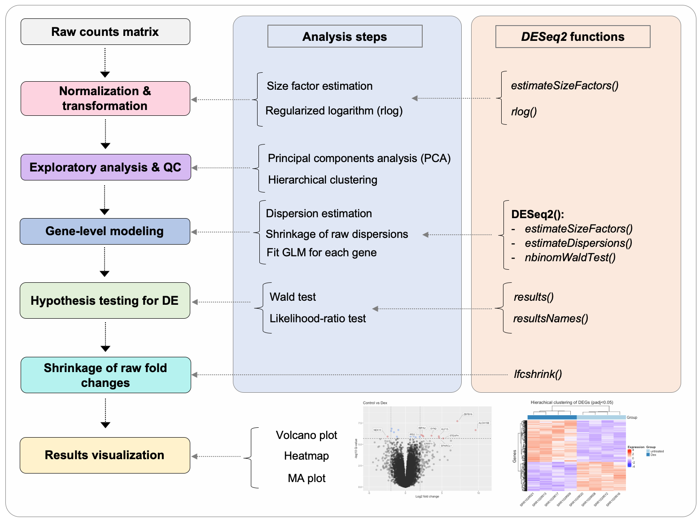
Final take-aways from the workshop
-
Spend the time to plan, consult, practice, (and money) to generate high quality data sets
-
If you are going to do a lot of Bioinformatics, you should get really good at the command-line (Bash), otherwise, pre-processing will be slow & painful
-
Identify, understand, and check key QC metrics to ensure the quality of your results
-
Spend the time to plan your experiment well (enough replicates, appropriate sequencing depth, etc.). No analysis can rescue a bas dataset.
-
If you will perform differential expression analysis regularly, you should build your experience in R, as well as you knowledge of fundamental statistical concepts
-
Make sure you understand what the core functions (e.g.
DESeq2) are doing by consulting the original manuscripts documentation. Failure to understand what these functions do may lead you to perform your analysis incorrectly. -
Correct for multiple testing!
How to consolidate your learning:
-
Revisit the workshop materials a week or two after the workshop, and re-run the analysis code from scratch
-
Edit/annotate the code, run sub-sections, and read the
helppages for important functions -
Practice with the complete dataset (all chromosomes), that is available to you for approx. 1 month on discovery in /scratch/rnaseq1/data/. This will give you experience running data from the entire genome, and an appreciation for the computational resources and required time to complete these tasks.
-
Read the methods sections of published papers that perform differential expression analyses. This will help you to understand how many of the concepts we have discussed are applied and reported in practice
-
Read reviews like this one from Stark et al, 2019, Nat. Rev. Genetics,
RNA Sequencing: The Teenage Years. -
Ask us questions! (Bioinformatics office hours: https://dartmouth.zoom.us/s/96998379866, Friday's at 1-2 pm, password: bioinfo)
High performance computing (HPC)
During the workshop, we all logged onto Discovery and ran our workflow interactively. Generally, this type of 'interactive' work is not encouraged on Discovery, and is better performed using other servers such as Andes & polaris (see article here on this topic from research computing).
However, working interactively with genomics data can be quite slow since many operations will need to be run in sequence across multiple samples. As an alternative, you can use the scheduler system on discovery, that controls how jobs are submitted and managed on the Discovery cluster.
Using the scheduler will allow you to make use of specific resources (such as high memory nodes etc.) and streamline your workflows more efficiently. Dartmouth just transitioned to using Slurm.
We encourage you to get comfortable using the scheduler and submitting jobs using an HPC system. Research Computing has a lot of great material regarding using Discovery on their website.
Suggested reading:
Reading manuscripts that use RNA-seq, or reviews specifically focused on RNA-seq are excellent ways to further consolidate your learning.
In addition, reading the original manuscripts behind common tools will improve your understanding of how that tool works, and allow you to leverage more complicated options and implementations of that tool when required.
Below we provide some suggested reading to help get you on your way:
Review articles
- Stark et al, 2019, Nat. Rev. Genetics.
RNA Sequencing: The Teenage Years - Conesa et al, 2016, Genome Biology.
A survey of best practices for RNA-seq data analysis - Wang, et al, 2009, Nat. Rev. Genetics.
RNA-Seq: a revolutionary tool for transcriptomics - Cresko Lab, Univeristy of Oregon.
RNA-seqlopedia : provides an overview of RNA-seq and of the choices necessary to carry out a successful RNA-seq experiment.
Original manuscripts: Popular RNA-seq tools
- Cutadapt:
Cutadapt Removes Adapter Sequences From High-Throughput Sequencing Reads. - STAR:
STAR: ultrafast universal RNA-seq aligner - HISAT2:
Graph-based genome alignment and genotyping with HISAT2 and HISAT-genotype - Bowtie2:
Fast gapped-read alignment with Bowtie 2 - HTSeq-count:
HTSeq—a Python framework to work with high-throughput sequencing data - DESeq2:
Moderated estimation of fold change and dispersion for RNA-seq data with DESeq2
Post DE analysis
After completing a DE analysis, we are usually left with a handful of genes that we wish to extract further meaning from. Depending on our hypothesis and what data is available to us, there are several ways to do this.
1. Integrative genomics
If you also collected other genomic data of a different modality ion the same samples (e.g. WGS-/WES, ChIP-seq, ATAC-seq), or an appropriate public dataset exists, you may choose to integrate your DE results with these data. This approach is referred to as integrative genomics and allows you to make insights that you would be unable to with a single data type.
For example, if you collected ChIP-seq for a specific transcription factor (TF) with paired RNA-seq data, you may wish to use your significant DEGs to identify genes whose expression is turned on/off by this TF under a treatment condition.
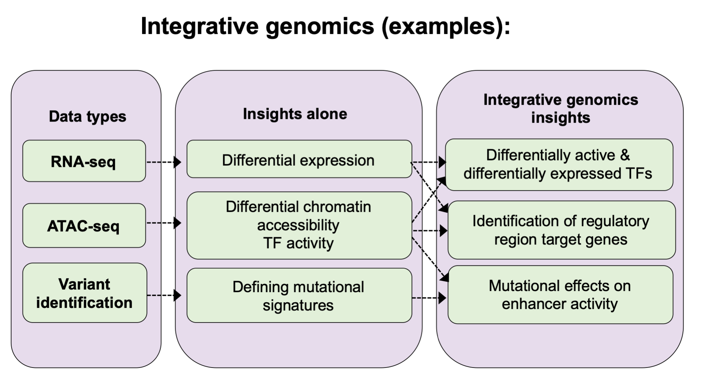
2. Gene ontology (GO) & pathway analyses
Unless very few significant DEGs were identified in your analysis, it can be difficult to extract biological insights from a long list of genes. GO and pathway analysis methods represent a diverse collection of approaches that seek to prioritize sets of functionally related genes that are enriched in a list of DEGs.
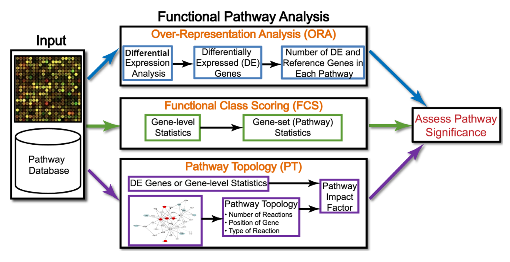
Many tools and methodologies exist for performing GO & pathway enrichment analysis. These tools make use of varied statistical approaches, some of which were designed for specific applications (such as for microarray data, not RNA-seq, e.g. GSEA), therefore selecting the most appropriate tool for your analysis can be non-trivial. We encourage you to read more about these methods and review your analysis plan with an expert if you plan to use these in you research.
Some suggested reading regarding gene ontology and pathway analysis approaches:
- Gene set analysis approaches for RNA-seq data: performance evaluation and application guideline. Briefings in Bioinformatics. 2016.
-
Gene set enrichment analysis: a knowledge-based approach for interpreting genome-wide expression profiles. PNAS 2005. (the original GSEA paper)
-
Gene Set Enrichment Analysis Made Simple. Stat Methods Med Red. 2009.
Feedback
We ask that you complete the survey that will be sent out over email so that we can gauge what worked well, and what we need to improve for the future. If you have additional thoughts that were not addressed in the survey, please feel free to contact any one of us, or reach out to the DAC email directly (DataAnalyticsCore@groups.dartmouth.edu).

This workshop will be offered again, in addition to our other bioinformatics workshop offerings (details will be posted on CQB website). If you have suggestions for workshops you would like to see, please let us know!
Bioinformatics consultations
Please reach out to us with questions related to content from this workshop, or for analysis consultations. We also host office hours and consultations by request.